摘要
Abstract
2013–2016年东北太平洋海洋热浪（MHW）是有记录以来最强烈的热带外海洋增暖事件之一。
The 2013–2016 marine heatwave (MHW) in the Northeastern Pacific ranks among the most intense extratropical ocean warming events on record.
其复杂的演变过程使认识其背后动力学机制的努力变得困难，而这些机制对于预测未来的海洋热浪至关重要。
Its intricate evolution has complicated efforts to understand the underlying dynamics crucial for predicting future MHWs.
本文中，我们利用一个闭合的三维拉格朗日热量收支来追踪该海洋热浪，定量刻画驱动其演变的各个过程。
Here, we track the MHW using a closed, three-dimensional Lagrangian heat budget that quantifies the processes driving its evolution.
三维粒子轨迹将该海洋热浪划分为北部和南部两个分量，并揭示二者具有不同的运动学起源。
Three-dimensional particle trajectories separate the MHW into northern and southern components and reveal that they are of distinct kinematic origin.
我们通过闭合收支定量证明：在维持该海洋热浪热含量方面起主导作用的是平流，而非海表强迫。
We quantitatively demonstrate through a closed budget that advection, rather than surface forcing, plays the dominant role in sustaining the MHW’s heat content.
北部分量由跨北太平洋流的埃克曼热输运减弱所维持，同时叠加了冬季海表热损失的减少。
The northern component was maintained by a weakening of Ekman heat transport across the North Pacific Current, combined with reduced wintertime surface heat loss.
南部分量则由加利福尼亚寒流上空沿岸风减弱所造成的埃克曼上升流减弱所驱动。
The southern component was driven by weakened Ekman upwelling caused by reduced alongshore winds over the California Current.
我们进一步识别出中太平洋上空一个持续的低海平面气压距平，它改变了风场型态，将热量和水汽向极方向重新分配，最终对海洋热浪的两个分量都形成了强迫。
We further identify a persistent low sea-level pressure anomaly over the central Pacific that altered wind patterns, redistributing heat and moisture poleward to ultimately force both parts of the MHW.
升高的海表温度反过来又放大了这一气压距平，从而构成一个正反馈回路，使该事件得以维持多年。
Elevated surface temperatures, in turn, amplified this pressure anomaly, completing a positive feedback loop that sustained the event across multiple years.
引言
Introduction
2013–2014年冬季，海表温度（SST）出现显著升高[1]，并演变为东北太平洋（NEP）一场破纪录、一直持续到2016年初的海洋热浪（MHW）[2]。
A significant increase in sea surface temperature (SST) emerged during the winter of 2013–2014[1], evolving into a record-breaking marine heatwave (MHW) in the Northeast Pacific (NEP) Ocean that persisted until early 2016[2].
这一事件通常被昵称为“Blob”，其范围从阿拉斯加湾（GOA）一直延伸到加利福尼亚寒流区（CC），SST距平峰值超过3°C[2,3]。
Commonly nicknamed the blob, this event extended from the Gulf of Alaska (GOA) to the California Current region (CC), with peak SST anomalies exceeding 3 °C[2,3].
该海洋热浪的强度与持续性造成了大范围的生态破坏[4]，包括加利福尼亚沿岸大面积的海带林消失[5,6]、大规模有毒藻华[7]以及鲸鱼被缠绕率上升[8]，导致数亿美元的经济损失[9]。
The intensity and persistence of the MHW led to widespread ecological disruption[4], including extensive kelp forest loss along the California coast[5,6], a large-scale toxic algal bloom[7], and elevated whale entanglement rates[8], resulting in economic losses of hundreds of millions of dollars[9].
尽管海洋热浪通常以SST距平来定义，但近期研究强调了随时间在三维空间（3D）中追踪热距平的重要性[10,11,12]。
Although MHWs are typically defined by SST anomalies, recent studies have highlighted the importance of tracking heat anomalies in three spatial dimensions (3D) over time[10,11,12].
次表层温度极端事件往往比其海表对应部分持续更久，并会延长海洋热浪的整体寿命[13,14,15,16]。
Subsurface temperature extremes often persist longer than their surface counterparts and contribute to the overall longevity of a MHW[13,14,15,16].
例如，2019–2020年东北太平洋海洋热浪大致局限于上层50 m，持续不到一年[17]；而2013–2016年的暖距平则延伸到150 m以深，并持续了两年多[16]。
For example, the 2019-2020 NEP MHW was largely confined to the top 50 m and lasted less than a year[17], whereas the 2013-2016 warm anomaly extended beyond 150 m depth and persisted for more than two years[16].
这种深穿透也表明，相对于海表热通量，海洋热输运具有重要作用[18,19]，因此有必要从三维拉格朗日视角认识海洋热浪的生命周期[10,11,20]。
Such deep penetration also emphasizes the role of ocean heat transport relative to surface heat flux[18,19], underscoring the need for a 3D Lagrangian view of the MHW life cycle[10,11,20].
在人为气候变化背景下，近几十年来海洋热浪变得更加频繁、更加强烈[21,22,23,24]。
Under anthropogenic climate change, MHWs have become more frequent and intense in recent decades[21,22,23,24].
每个区域、每次事件都由海表热通量、海洋混合与输运过程变化的不同组合所驱动[12,24,25]。
Each region and event is driven by a distinct combination of changes in surface heat fluxes, ocean mixing, and transport processes[12,24,25].
要更好地理解海洋热浪的演变，关键在于诊断这些驱动因子出现的时间、位置及其相对重要性。
To better understand the evolution of an MHW, it is crucial to diagnose the timing, location, and relative importance of these drivers.
然而，用现有方法开展此类诊断分析仍然具有挑战性。
However, such diagnostic analyses remain challenging with existing approaches.
已有研究表明，源自热带[3]、中纬度[26]和北极[23]的远程大气遥相关能够为东北太平洋的海洋增暖创造有利的大气条件。
Remote atmospheric teleconnections originating from the tropics[3], mid-latitudes[26], and the Arctic[23] have been shown to create favorable atmospheric conditions for ocean warming in the NEP.
先前研究还表明，东北太平洋的SST距平可触发远端大气响应，包括干旱[27,28]和寒冬[29,30,31,32]。
Previous studies have also shown that SST anomalies in the NEP can trigger remote atmospheric responses, including droughts[27,28] and cold winters[29,30,31,32].
然而，局地大气反馈的作用——即SST距平通过反馈调制其自身的驱动因子——在很大程度上仍未得到检验。
Yet, the role of local atmospheric feedbacks—through which SST anomalies modulate their own drivers—remains largely unexamined.
本研究追踪海洋热浪水团的三维运动学特征，而不仅仅是SST型态。
In this work, we track the 3D kinematics of MHW watermasses rather than just SST patterns.
现有对“Blob”的分析大多聚焦于2013年底事件的发生阶段[1,23,26,33]，或仅考察其海表信号[25,34]，或主要孤立地研究大气[35]或海洋[12]驱动因子——对海洋热浪整个生命周期的演变只给出了片面的描述。
Existing analyses of the Blob have largely focused on the onset of the event in late 2013[1,23,26,33], examined only its surface signature[25,34], or primarily investigated either atmospheric[35] or oceanic[12] drivers in isolation—providing only a partial account of how the MHW evolved throughout its full life cycle.
通过追踪暖距平不断变化的三维足迹而非仅其海表表现，我们的框架捕捉到了这一大尺度传播事件本质上的平流属性，并定量给出在其生命周期的每个阶段，海表通量、平流和混合等各过程在何处、何时、以多大幅度改变海洋热浪的热含量。
By tracking the evolving 3D footprint of the warm anomaly rather than its surface expression alone, our framework captures the fundamentally advective nature of this large-scale propagating event and quantifies where, when, and by how much each process—including surface fluxes, advection, and mixing—modifies the heat content of the MHW at every stage of its life cycle.
我们的分析基于“海洋环流与气候估算”第4版第4次发布（ECCO4）全球海洋状态估计[36,37]，其闭合的热量收支与受资料约束的流场使这种针对观测海洋热浪的拉格朗日核算成为可能。
Our analyses are based on the Estimating the Circulation and Climate of the Ocean, Version 4 Release 4 (ECCO4) global ocean state estimate[36,37], whose closed heat budgets and data-constrained flow fields make such a Lagrangian accounting of observed MHWs possible.
至关重要的是，ECCO4还使我们能够在单一自洽的框架内同时考察大气与海洋动力学，并解析出维持该事件的海气耦合相互作用。
Crucially, ECCO4 also allows us to examine both atmospheric and oceanic dynamics within a single, self-consistent framework and resolves the coupled air-sea interactions that sustained the event.
结果
Results
海洋热浪SST距平的演变如图1a–d所示，基于最优插值海表温度（OISST）数据集（另见图S.1、S.2）。
The evolution of the MHW SST anomaly is shown in Fig. 1a–d, based on the Optimum Interpolation Sea Surface Temperature (OISST) dataset (see also Figs. S.1, 2).
暖SST距平最早出现在2013年冬季（图S.1a–c、S.2a–c）。
A warm SST anomaly first emerged in the winter of 2013 (Figs. S.1a–c, 2a–c).
2014年初，30°N以北的SST距平达到峰值，同时另一个暖距平沿加利福尼亚寒流逐渐发展（图1a-b）。
In early 2014, an SST anomaly north of 30° N reached its peak, and another warm anomaly gradually developed along the California Current (Fig. 1a, b).
北部距平一直持续到2014年秋至2015年春的一段相对偏冷阶段，随后出现了一段快速增暖期。
The northern anomaly persisted until a relatively cool phase from autumn 2014 through spring 2015, followed by a period of rapid warming.
与此同时，南部距平持续增强并向离岸方向扩展（图1c-d）。
Meanwhile, the southern anomaly continued to intensify and expand offshore (Fig. 1c, d).
两个距平最终都在2016年初减弱（图S.1o–p、S.2o–p）。
Both anomalies eventually weakened in early 2016 (Figs. S.1o, p, 2o, p).
南北距平在发生时间上的差异和空间上的分离表明，它们很可能受不同机制的影响。
The differences in timing and spatial separation between the northern and southern anomalies suggest they are likely influenced by distinct mechanisms.
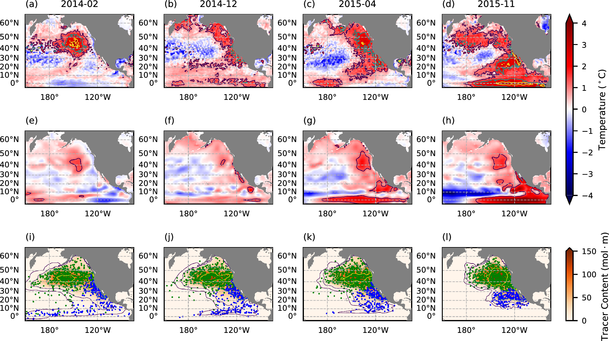
图1：东北太平洋（NEP）海洋热浪（MHW）的时间演变。
Fig. 1: Temporal evolution of the Northeast Pacific (NEP) marine heat wave (MHW).
(a–d) 来自最优插值海表温度产品（OISST）的月平均海表温度（SST）距平；(e–h) 来自“海洋环流与气候估算”第4版第4次发布产品（ECCO4）的月平均上层150 m温度距平；(i–l) 于2016年3月1日释放并被后向时间追踪的垂向积分被动示踪物浓度快照。
a–d Monthly-averaged sea surface temperature (SST) anomaly from the Optimum Interpolation Sea Surface Temperature product (OISST), e–h monthly-averaged upper 150 m temperature anomaly from the Estimating the Circulation and Climate of the Ocean, Version 4 Release 4 product (ECCO4), and i–l snapshots of vertically-integrated passive tracer concentration being tracked backwards in time from release on March 1, 2016.
(a–d)面板的等值线层级为1°C（紫）、2°C（绿）和3°C（黄）；(e–h)面板的等值线层级为1.25°C。
Contour levels for (a–d) are 1 ° C (purple), 2 ° C (green), and 3 ° C (yellow); for (e–h), the contour level is 1.25 ° C.
(i–l)面板中的等值线表示积分示踪物浓度1 mol · m（深紫）、10 mol · m（紫）、50 mol · m（绿）和100 mol · m（黄）。
Contours in (i–l) denote integrated tracer concentrations of 1 mol ⋅ m (dark purple), 10 mol ⋅ m (purple), 50 mol ⋅ m (green), and 100 mol ⋅ m (yellow).
(i–l)面板还显示了向后时间追踪的（随机选取的）拉格朗日粒子位置子集；海洋热浪北部（N-MHW）粒子为绿色，南部（S-MHW）粒子为蓝色。
i–l also show a (randomly-selected) subset of Lagrangian particle locations being tracked backwards in time; northern part of the MHW (N-MHW) particles are green, and southern part of the MHW (S-MHW) particles are blue.
为定量刻画该海洋热浪的统计特征，我们利用逐日OISST资料计算两个互补的指标：持续时间和累积强度（图2，见方法部分）。
To quantify the MHW’s statistics, we use daily OISST data to calculate two complementary metrics: duration and cumulative intensity (Fig. 2, see Methods).
从2013年12月到2016年2月的每个季节，东北太平洋大片海域超过一半的时间（~45天）处于海洋热浪状态，累积强度通常超过100 °C·天。
In every season from December 2013 to February 2016, large parts of the NEP exhibit MHW conditions more than half the time (~45 days) and the cumulative intensity routinely exceeds 100 ° C days.
部分海域甚至几乎整个季节（~90天）都处于海洋热浪状态，累积强度超过300 °C·天。
Some areas even show MHW conditions for almost the entire season (~90 days) with cumulative intensities exceeding 300 ° C days.
作为对比，近期研究将16天的持续时间和50 °C·天的累积强度确定为触发渔场收缩的关键海洋热浪阈值[38]。
For comparison, durations of 16 days and cumulative intensities of 50 ° C days have been recently identified as critical MHW thresholds to trigger fishing ground contraction[38].
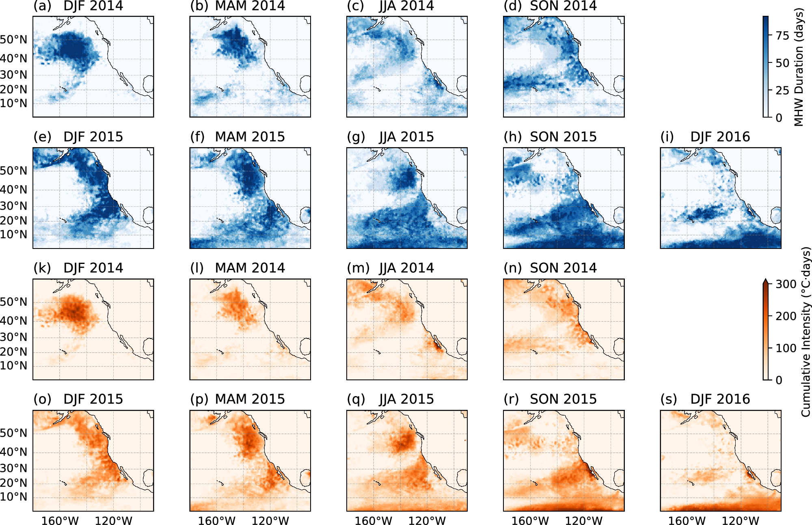
图2：来自最优插值海表温度产品（OISST）的逐季海洋热浪（MHW）持续时间和累积强度。
Fig. 2: Seasonal marine heat wave (MHW) duration and cumulative intensity from the Optimum Interpolation Sea Surface Temperature product (OISST).
(a-i) 2013年12月1日至2016年3月1日间每个季节的海洋热浪持续时间。
a–i The MHW duration in each season between December 1st, 2013 and March 1st, 2016.
(k-s) 相同时段内的海洋热浪累积强度。
k–s The MHW cumulative intensity in the same periods of time.
鉴于该海洋热浪深入海洋内部并携带巨大的热惯性[14,16]，上层海洋热含量（OHC）分析比单用SST能提供更完整的刻画[15,39,40]。
Given that the MHW penetrated deep into the ocean and carried substantial thermal inertia[14,16], an analysis of upper ocean heat content (OHC) provides a more complete characterization than SST alone[15,39,40].
ECCO中的海表温度与OISST吻合良好（图S.1、S.2）。
The surface temperature in ECCO agrees well with OISST (Figs. S.1, 2).
上层海洋内部温度与Argo现场观测也吻合良好[41]（图S.3、S.4，另见文献[12,36,37,42]），这为评估上层150 m平均的次表层温度距平提供了依据（图1E–H）。
The interior upper-ocean temperature also agrees well with in situ measurements from Argo[41] (Figs. S.3, S.4, see also refs. [12,36,37,42]), which justifies the assessment of the subsurface temperature anomaly averaged over the top 150 m (Fig. 1E–H).
尽管平均OHC距平与SST密切相关，但它更清晰地揭示了随大尺度环流向东传播的特征（图S.5）。
Although it closely correlates with SST, the averaged OHC anomaly more clearly reveals eastward propagation with the general circulation (Fig. S.5).
为探究这种传播的性质，图1i–l（另见图S.6、S.7、S.8）展示了注入该海洋热浪的被动示踪物浓度与拉格朗日粒子的位置（见方法部分），它们沿北太平洋流（NPC）向东平流。
To investigate the nature of this propagation, Fig. 1i–l (see also Figs. S.6–8) displays the concentration of a passive tracer and the locations of Lagrangian particles that were injected into the MHW (see Methods) and advected eastward along the North Pacific Current (NPC).
示踪物分布中心（黄色等值线）向东移动的速度快于深度积分温度距平的中心（图1e–h中黑色等值线，另见补充影片1）。
The center of the tracer distribution (yellow contours) moves eastward faster than the center of the depth-integrated temperature anomaly (black contours in Fig. 1e–h, see also Supplementary Movie 1).
这表明该海洋热浪既不是静止的，也不是纯拉格朗日的。
This shows that the MHW is neither stationary nor purely Lagrangian.
注入30°N以北（以南）的粒子所代表的水团称为N-MHW（S-MHW）。
The water masses represented by the particles injected north (south) of 30° N are referred to as N-MHW (S-MHW).
N-MHW（绿色粒子）与S-MHW（蓝色粒子）之间极少混合，表明二者缺乏共同的起源（图1i–l），这再次暗示二者有着不同的生命周期，并进一步促使我们对二者分别开展拉格朗日收支分析。
Minimal mixing between N-MHW (green particles) and S-MHW (blue particles) demonstrates the lack of a shared origin (Fig. 1i–l), and again, suggests distinct life cycles that further motivate separate Lagrangian budget analyses.
值得注意的是，N-MHW和S-MHW代表随时间演化的拉格朗日水体，记录了水块的历史，这与基于瞬时SST阈值的常见海洋热浪定义在概念上不同[40]。
Notably, N-MHW and S-MHW represent time-evolving Lagrangian volumes that record the history of water parcels, which differ conceptually from common definitions of MHWs based on an instantaneous SST threshold[40].
在N-MHW和S-MHW内计算的热量收支结果，在概念上也不同于定义在海表混合层或固定欧拉体积上的收支结果。
Heat budget results calculated within N-MHW and S-MHW are also conceptually different from those defined on a surface mixed-layer or a fixed Eulerian volume.
拉格朗日收支归因
Lagrangian budget attribution
拉格朗日热量收支（见方法4.5节）定量给出海表加热、平流和扩散的相对贡献（图3–4）。
The Lagrangian heat budget (see Methods Section 4.5) quantifies relative contributions of surface heating, advection, and diffusion (Figs. 3–4).
从欧拉视角开展的类似分析见图S.9。
Similar analyses from an Eulerian perspective can be found in Fig. S.9.
N-MHW在两个时段经历了持续性高温：2013年12月至2014年10月，以及2015年3月至2015年11月（图3a）。
The N-MHW experienced persistently high temperature during two periods: December 2013 to October 2014, and March 2015 to November 2015 (Fig. 3a).
温度变化发生在不同的时间尺度上。
Temperature variability operates on different timescales.
在较短的时间尺度上（例如几个月，如2014年12月至2015年4月之间所见），温度变化受异常海表加热（，由海表湍流通量和辐射通量引起）的强烈影响。
On shorter timescales (e.g., a few months, as seen between December 2014 and April 2015), temperature variability is strongly influenced by anomalous surface heating (, due to surface turbulent and radiative fluxes).
既驱动快速增暖，也驱动快速冷却事件；后者（2014年底和2016年初）会强烈削弱温度距平。
is responsible for both rapid warming and rapid cooling events (late 2014 and early 2016) that strongly damp the temperature anomaly.
然而，在更长的时间尺度上，异常平流（，即异常速度跨越平均温度梯度产生的平流）起到维持累积热量的作用，而海表加热的时间起伏则趋于平均抵消。
On longer timescales, however, anomalous advection (, advection by anomalous velocity across mean temperature gradients) acts to sustain the accumulated heat, while temporal fluctuations in surface heating tend to average out.
直到2016年初，异常平流始终保持为正，维持着热含量距平，并抵消了海表通量的冷却作用。
Until early 2016, anomalous advection remained consistently positive, sustaining the heat content anomaly and offsetting the cooling effect of surface fluxes.
这一型态贯穿成熟/衰减期（图3a中蓝色阴影时段）始终存在，彼时温度距平稳定或下降。
This pattern persisted through the maturity/decay periods (shown as blue-shaded periods in Fig. 3a), when temperature anomalies were steady or decreasing.
垂直扩散与海表加热呈强反相关，其作用是将热量从海表重新分配到海洋内部。
Vertical diffusion is strongly anticorrelated with surface heating, redistributing heat from the surface to the ocean interior.
总体而言，与异常平流和海表加热相比，垂直扩散及其他过程起次要作用。
Overall, vertical diffusion and other processes play minor roles compared to anomalous advection and surface heating.
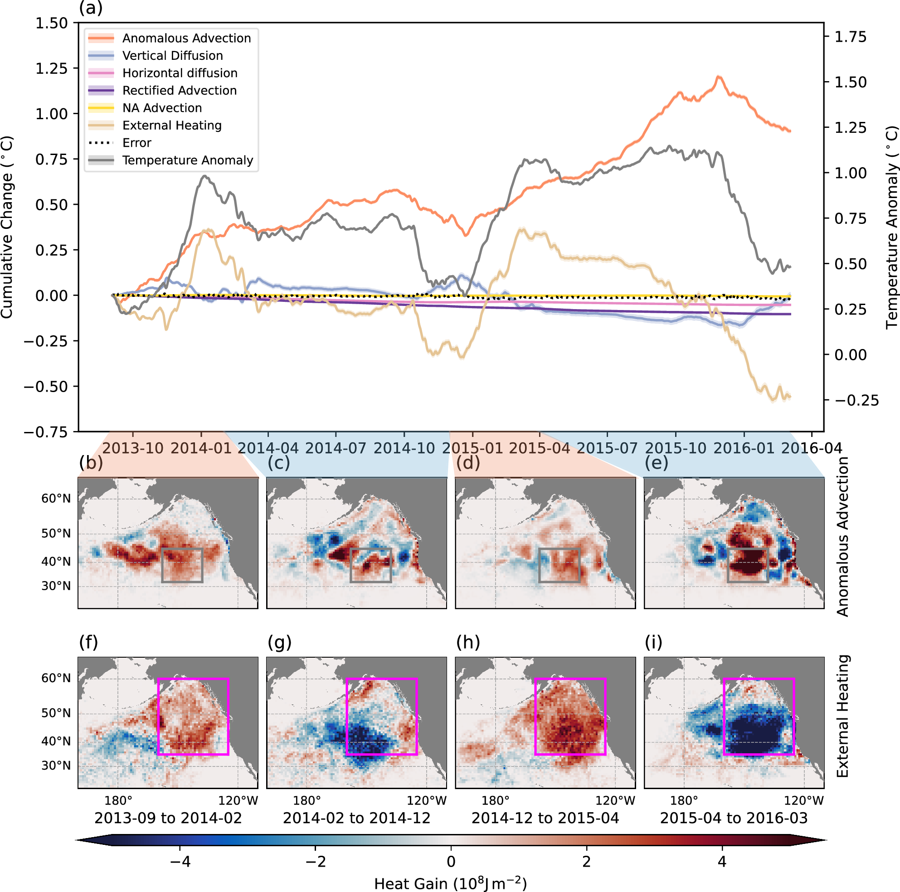
图3：海洋热浪北部（N-MHW）的拉格朗日热量收支。
Fig. 3: Lagrangian heat budget of the northern part of the marine heat wave (N-MHW).
(a) 粒子平均温度距平（灰线）及式(3)右端各项累积贡献的时间序列。
a Time series of particle-averaged temperature anomaly (gray line) and cumulative contribution from each right-hand-side term of Equation (3).
每条线周围的散布区表示样本均值正负一个标准误的范围。
The spread area around each line shows the range of plus or minus one standard error for the sample mean.
点线表示收支分析中产生的残差。
The dotted line shows the residual incurred during budget analysis.
(b–i) 四个时段内异常平流（b–e）和海表加热（f–i）贡献的空间分布图，四个时段以红色（生长）和蓝色（成熟/衰减）多边形标示。
b–i Map of contribution from anomalous advection (b–e) and surface heating (f–i) in the four periods, which are highlighted by red (growth) and blue (maturity/decay) polygons.
(b–e)面板中的灰框表示158°W至138°W、32°N至45°N的经纬度区域。
The gray box in (b–e) denotes the longitude-latitude region spanning 158° W to 138° W and 32° N to 45° N.
(f–i)面板中的品红框覆盖125°W至160°W、35°N至60°N的区域。
The magenta box in (f–i) covers the area from 125° W to 160° W and 35° N to 60° N.
图3b–i展示了在每个生长期（以增暖为主）或成熟/衰减期（稳定或降温）内，异常平流和海表加热如何在空间上影响N-MHW。
Figure 3b–i show how anomalous advection and surface heating affect the N-MHW spatially during each growth (predominantly warming) or maturity/decay (steady or cooling) periods.
在阿拉斯加湾内（灰色框标示），异常平流在生长期（红色阴影）和成熟/衰减期（蓝色阴影）都提供持续稳定的局地加热（图3b–e）。
Within the GOA (highlighted by the gray box), anomalous advection provides constant localized heating over both growth (red-shaded) and maturity/decay (blue-shaded) periods (Fig. 3b–e).
相比之下，海表加热在空间上更均匀，但时间变率更强：生长期出现大范围加热（图3f、h），成熟/衰减期则为冷却（图3g、i）。
In contrast, surface heating exhibits greater spatial uniformity but stronger temporal variability, with widespread heating during growth periods (Fig. 3f, h) and cooling over maturity/decay periods (Fig. 3g, i).
值得注意的是，季节性热损失的大范围减少驱动了2014–2015年冬季急剧的异常增暖，如图3a、h所示。
Noticeably, the widespread decrease in seasonal heat loss drove the sharp anomalous warming during the winter of 2014–2015, as shown in Fig. 3a, h.
与N-MHW类似，异常平流和海表加热对S-MHW暖距平演变的贡献最大（图4a）。
Similar to the N-MHW, anomalous advection and surface heating contribute most to the evolution of the warm anomaly in S-MHW (Fig. 4a).
的阻尼作用同样主导了2015年11月之后的衰减阶段（蓝色阴影）。
Damping by again dominated the decay phase after November 2015 (blue-shaded).
然而，在2015年11月之前的生长阶段（红色阴影），在S-MHW中的作用比在N-MHW中小得多，而异常平流贡献了热含量增加的绝大部分。
However, during the growth phase before November 2015 (red-shaded), played a much smaller role in S-MHW than in N-MHW, while anomalous advection accounted for most of the heat content increase.
这种增暖强烈集中于加利福尼亚寒流上升流区（图4b、c中倾斜的青色框）。
This warming was strongly concentrated in the CC upwelling zone (oblique cyan boxes in Fig. 4b, c).
如图4d所示，海表加热使30°N以北的海洋变暖，而其以南则出现冷却。
As shown in Fig. 4d, surface heating warmed the ocean north of 30° N while cooling occurred south of it.
海表加热的这种空间抵消使其对S-MHW的净贡献相对较弱。
This spatial cancellation of surface heating resulted in a relatively weak net contribution to the S-MHW.
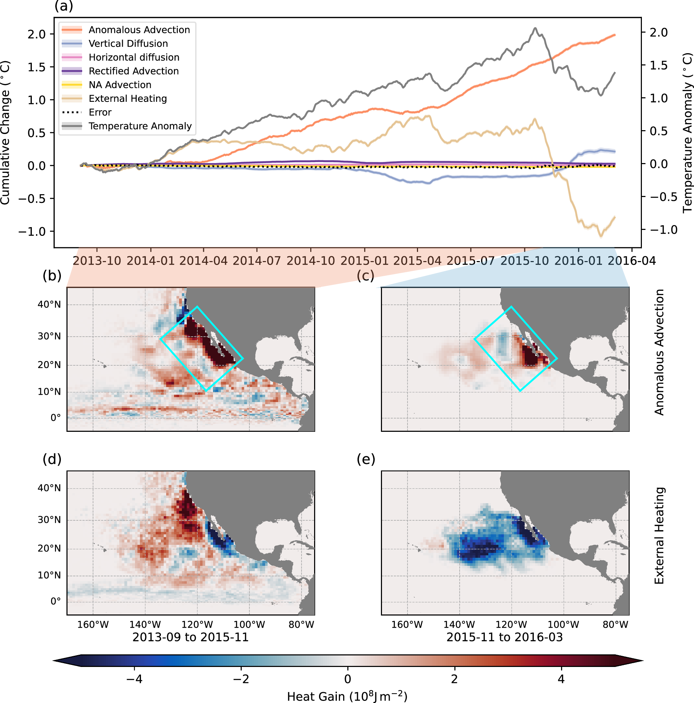
图4：海洋热浪南部（S-MHW）的拉格朗日热量收支。
Fig. 4: Lagrangian heat budget of the southern part of the marine heat wave (S-MHW).
(a) S-MHW的粒子平均温度距平及式(3)右端各项累积贡献的时间序列，与图3a类似。
a Time series of particle averaged temperature anomaly and cumulative contribution from each right-hand-side term of Equation (3) for S-MHW, similar to Fig. 3a.
(b、c) 异常平流贡献和(d、e)海表加热贡献的空间分布图，与图3b、i类似。
b, c Spatial map of contribution from anomalous advection and (d, e) surface heating similar to Fig. 3b, i.
(b–c)面板中的青框表示加利福尼亚寒流（CC）上升流区，角点为(120°W, 39.5°N)、(102.5°W, 22.5°N)、(116.6°W, 10.55°N)和(134.1°W, 29.2°N)。
The cyan box in (b, c) denotes the California Current (CC) upwelling zone, with corners at (120° W, 39.5° N), (102.5° W, 22.5° N), (116.6° W, 10.55° N), and (134.1° W, 29.2° N).
异常埃克曼输运造成的持续性热量累积
Prolonged heat accumulation by anomalous Ekman transport
阿拉斯加湾（图3b–e灰框）内由异常平流导致的热量持续累积，促进了N-MHW的生长并抵消了海表冷却（例如图3g、i）。
Persistent accumulation of heat from anomalous advection in the GOA (gray box in Fig. 3b–e) contributes to the growth of N-MHW and offsets surface cooling (e.g., Fig. 3g, i).
阿拉斯加湾区域的定义与沿北太平洋流的SST锋面高度吻合，如图5a–b灰框所示，那里密集排列的等温线表明经向温度梯度很强。
The definition of the GOA region closely aligns with the SST front along the NPC, as shown in the gray box in Fig. 5a, b, where a steep meridional temperature gradient is evident from tightly packed isotherms.
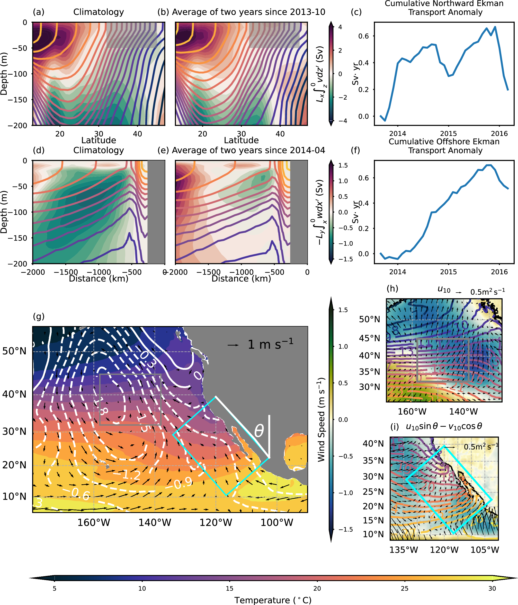
图5：异常平流所致增暖的诊断。
Fig. 5: Diagnostics of warming due to anomalous advection.
(a-b) 时间平均代理流函数（填色；见方法）和温度等值线（间隔1°C）：(a)整个海洋环流与气候估算第4版第4次发布（ECCO4）时段（气候态），(b)2013年10月至2015年9月。
a, b Time-mean proxy stream function (shading; see Methods) and temperature contours (with 1 ° C spacing) over (a) the whole Estimating the Circulation and Climate of the Ocean, Version 4 Release 4 (ECCO4) period (climatology) and (b) October 2013 to September 2015.
灰框标示与图3b–e所定义区域相同的上层50 m范围。
The gray box indicates the same region defined in Fig. 3b–e in the upper 50 m.
(c) 跨40°N、138°W至158°W之间的累积向北埃克曼输运距平。
c Cumulative northward Ekman transport anomaly across 40° N, between 138° W and 158° W.
(d-e) 时间平均代理流函数（填色；见方法）和温度等值线：(d)整个ECCO4时段，(e)2014年4月至2016年3月。
d, e Time-mean proxy stream function (shading; see Methods) and temperature contours over (d) the whole ECCO4 period and (e) April 2014 to March 2016.
(f) 加利福尼亚寒流（CC）中跨中线的累积离岸埃克曼输运距平。
f Cumulative offshore Ekman transport anomaly in the California Current (CC) across the midline.
(g) 2014–2015年平均的异常10 m风（箭头）和海平面气压（SLP；等值线，单位hPa），叠加在气候平均海表温度（SST；填色）之上。
g Anomalous 10 m wind (arrows) and sea level pressure (SLP; contours, in hPa) averaged over 2014-2015, superimposed on climatological mean sea surface temperature (SST; shading).
(h–i) 异常10 m纬向风(h)和沿岸风(i)（填色）、垂直积分埃克曼速度矢量（箭头），以及ECCO4时段气候平均SST（等值线，间隔1°C）。
h, i Anomalous 10 m zonal (h) and alongshore (i) wind (shadings), the vertically integrated Ekman velocity vectors (arrows), and the climatological mean SST over the ECCO4 period (contours, with 1 ° C spacing).
(h)和(i)中绘制的量分别自2013年10月和2014年4月起做两年平均。
Quantities plotted in (h) and (i) are averaged over two-year periods since October 2013 and April 2014, respectively.
(a–f)基于ECCO4，(g–i)来自ECMWF第五代再分析（ERA5）。
a–f are based on ECCO4, while (g–i) are derived from ECMWF Reanalysis v5 (ERA5).
图5a–b中的填色代表代理翻转流函数（见方法4.6节及图S.10–S.11），其垂直导数反映经向速度。
The shading in Fig. 5a, b represents a proxy overturning stream function (see Methods section 4.6 and Fig. S.10–S.11), whose vertical derivative reflects the meridional velocity.
异常平流带来的持续加热主要发生在2013年10月开始的两年期间。
The persistent heating from anomalous advection occurred mainly during the two-year period starting October 2013.
在此期间，热结构在定性上与气候态保持相似（图5a–b）。
Over this period, the thermal structure remained qualitatively similar to the climatology (Fig. 5a, b).
然而，代理翻转流函数表明，在灰色阴影区域下方，埃克曼驱动的翻转环流圈显著收缩[43]。
However, the proxy overturning stream function indicates a pronounced contraction of the Ekman-driven overturning cell[43] beneath the gray-shaded region.
在正常情况下，东向风诱发向赤道的埃克曼输运，使阿拉斯加湾海表冷却[43]。
Under normal conditions, eastward winds induce equatorward Ekman transport, which cools the GOA surface[43].
在研究期间，这种输运显著减弱（负值的绝对值减小），通过平流导致异常增暖。
This transport was substantially reduced (less negative) during the study period, leading to anomalous warming through advection.
向赤道埃克曼输运的减弱——约0.3 Sv（图5c）——在量级上可与上层50 m代理流函数所观测到的下降相比拟（图5b）。
The reduction in equatorward Ekman transport—approximately 0.3 Sv (Fig. 5c)—is comparable in magnitude to the observed decline in the proxy stream function in the upper 50 m (Fig. 5b).
减弱的海表纬向风速（及相应的风应力）驱动了这种向赤道输运的减弱（图5h）。
Weakened surface zonal wind velocity (and associated wind stress) drives this reduced equatorward transport (Fig. 5h).
S-MHW的显著增暖局限于沿岸一带，始于2014年4月并持续到2016年年中。
Pronounced warming of S-MHW was confined to the coastline, beginning in April 2014 and continuing through mid-2016.
如图5d所示，在正常情况下，南向沿岸风产生离岸埃克曼输运，诱发强上升流，将次表层冷水带至海表，从而冷却上层海洋[44]。
As shown in Fig. 5d, under normal conditions, southward alongshore winds generate offshore Ekman transport, inducing strong upwelling that brings cold subsurface water to the surface, thereby cooling the upper ocean[44].
在2014年4月之后的两年里，加利福尼亚寒流区的这一翻转环流圈显著减弱（图5e）。
During the two years since April 2014, this overturning cell in the CC region was substantially weakened (Fig. 5e).
该环流圈的输运减少了约1 Sv，并在垂直方向上局限于上层100 m。
The cell carried about 1 Sv less transport and became vertically confined to the upper 100 m.
图5f所示的异常向岸输运（即离岸流的减弱）归因于南向沿岸风应力的减小（图5i）。
Anomalous onshore transport (i.e., a reduction in offshore flow) depicted in Fig. 5f was attributed to a decrease in southward alongshore wind stress (Fig. 5i).
离岸输运的减弱导致上升流减弱，进而使冷却减弱。
The weakened offshore transport led to diminished upwelling and, consequently, a reduction in cooling.
随着上升流减弱使海表温度升高，垂直层结增强（图5d–e），进一步抑制上升流并加剧增暖效应[44]。
As surface temperatures rose due to reduced upwelling, vertical stratification increased (Fig. 5d, e), further inhibiting upwelling and compounding the warming effect[44].
图5g将平均海平面气压（SLP）距平与造成阿拉斯加湾和加利福尼亚寒流区埃克曼驱动增暖（即冷却减弱）的异常海表风场型态联系起来。
Figure 5g connects the averaged sea level pressure (SLP) anomaly with the anomalous surface wind patterns responsible for the Ekman-driven warming (i.e., reduced cooling) in both the GOA and CC regions.
这一大尺度SLP距平（直径~5000 km，超过典型的罗斯贝半径[45]）通过地转平衡在阿拉斯加湾和加利福尼亚寒流区都产生了异常风。
This large-scale SLP anomaly ( ~ 5000 km in diameter, exceeding the typical Rossby radius[45]) generated the anomalous wind in both GOA and CC via geostrophic balance.
因此，这一SLP距平最终驱动了在N-MHW和S-MHW区域观测到的增暖。
Thus, this SLP anomaly ultimately drove the warming observed in both the N-MHW and S-MHW regions.
异常海表热通量的冬季加热
Wintertime heating of anomalous surface heat flux
虽然异常平流有助于热量的长期累积，但海表加热在N-MHW的冬季增强中扮演重要角色（图3a）。
While anomalous advection contributes to prolonged accumulation of heat, surface heating plays an important role in wintertime strengthening of N-MHW (Fig. 3a).
ECMWF第五代再分析（ERA5）中的净海表热通量清晰地突显了2013-2014年（图S.12）和2014-2015年（图6a）两个冬季的增暖事件。
The net surface heat flux in ECMWF Reanalysis v5 (ERA5) clearly highlights the two warming episodes during the winters of 2013–2014 (Fig. S.12) and 2014–2015 (Fig. 6a).
在两次事件中，异常海表增暖（即热损失减少）都主要由异常潜热通量、感热通量和长波辐射驱动，其中潜热是主要贡献者。
In both events, the anomalous surface warming (i.e., reduced heat loss) was primarily driven by anomalous latent heat flux, sensible heat flux, and longwave radiation, with latent heat emerging as the principal contributor.
本小节聚焦2014-2015年冬季的第二次N-MHW增暖事件。
This subsection focuses on the second N-MHW warming episode in the winter of 2014-2015.
对第一次增暖事件的类似分析见图S.12和图S.13（另见文献[1]）。
Similar analyses for the first warming episode are provided in Figs. S.12 and S.13 (see also ref. [1]).
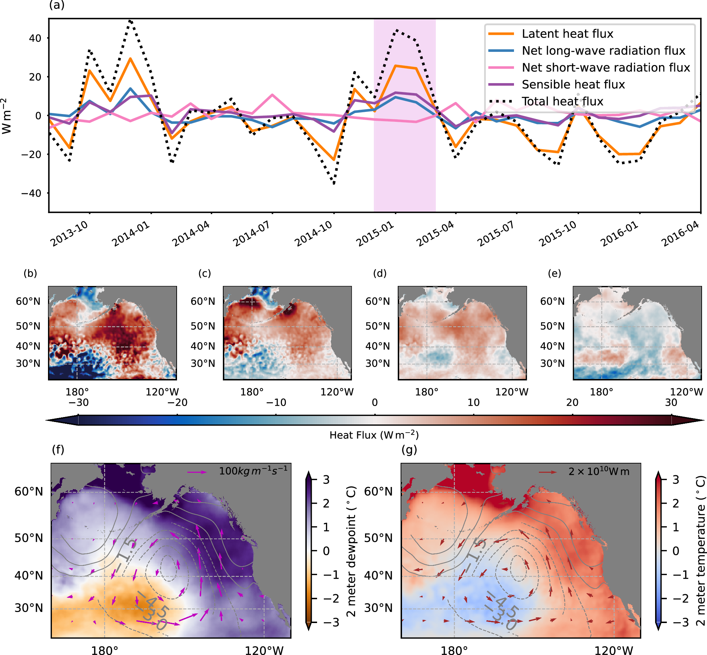
图6：海表热通量所致增暖的诊断。
Fig. 6: Diagnostics of warming due to surface heat fluxes.
(a) 异常海表热通量时间序列，在图3f–i定义的北部海洋热浪（N-MHW）品红框内平均，包括长波辐射、短波辐射、感热通量、潜热通量及其总和。
a Time series of anomalous surface heat fluxes, averaged in the northern marine heat wave (N-MHW) magenta box defined in Fig. 3f–i, including longwave radiation, shortwave radiation, sensible, latent heat, and their total.
(b–e) 2014年12月至2015年1月平均的异常海表热通量（(a)中高亮时段）。
b–e Anomalous surface heat fluxes averaged from December 2014 to January 2015 (highlighted period in (a)).
(f–g) 同一时段平均的异常(f) 2米露点温度和(g) 2米温度（填色）。
f, g Anomalous (f) 2-meter dewpoint temperature and (g) 2-meter temperature averaged over the same period (shadings).
垂直积分的水汽通量和热通量距平以箭头显示于(f)和(g)，叠加在海平面气压（SLP）距平（等值线，间隔0.3 hPa）之上。
The vertically integrated water vapor flux and heat flux anomalies are shown as arrows in (f) and (g), overlaid on sea level pressure (SLP) anomaly (contours with 0.3 hPa spacing).
2014年底，SST仍然异常偏高，如图1b所示。
In late 2014, SST remained anomalously high, as shown in Fig. 1b.
这意味着热损失的减少很可能由异常的大气或辐射条件所驱动。
This implies that the reduction in heat loss was likely driven by anomalous atmospheric or radiative conditions.
海表风速、气温和湿度（露点）影响潜热与感热通量。
Surface wind speed, air temperature, and humidity (dew point) influence the latent and sensible heat fluxes.
大气云量、温度和湿度廓线影响海表辐射通量。
Atmospheric cloud cover, temperature, and moisture profiles affect the surface radiative fluxes.
晴空条件下的辐射通量与总辐射通量仅有很小差异，意味着云在保持热量方面作用有限（图S.14）。
Compared with total radiative fluxes, clear-sky conditions exhibit only minor differences, implying that clouds play a limited role in retaining heat (Fig. S.14).
增暖区的风速有所增大（图S.15a）；孤立地看，这会增强海表湍流热损失——与观测到的减少相反——表明热损失的减少主要由热力学变量驱动。
The warming region experienced an increase in wind speed (Fig. S.15a), which, in isolation, would enhance surface turbulent heat loss—opposite to the observed decrease—suggesting that the reduction in heat loss is primarily driven by thermodynamic variables.
图6b–g揭示了异常热通量、温度和湿度型态之间很强的空间相关性。
Figure 6b–g reveals strong spatial correlations among anomalous heat flux, temperature, and humidity patterns.
侧向平流是增暖区上空异常热力学结构的主要驱动因子（图S.15a、c）。
Lateral advection was the primary driver of the anomalous thermodynamic structure over the warming region (Fig. S.15a, c).
强劲的向极热量和水汽输送与偏高的近海面气温和露点温度（图6f–g）以及增加的整层积分温度和水汽含量（图S.15b、d）密切吻合。
Strong poleward heat and vapor transport aligns closely with elevated surface air temperature and dew point temperature (Fig. 6f, g), as well as increased column-integrated temperature and vapor content (Fig. S.15b, d).
2014-2015年冬季阿留申低压特别强且位置异常偏南，如图6f–g中负SLP距平（虚线等值线）所示。
The Aleutian Low was particularly intense and far south during the winter of 2014–2015, as indicated by the negative SLP anomalies (dashed contours) in Fig. 6f, g.
与这一低SLP系统相伴的风将暖湿空气从较低纬度输送到研究区域，与侧向通量矢量一致。
Winds associated with this low SLP system transported warm, moist air from lower latitudes into the region of interest, consistent with the lateral flux vectors.
这些结果提示，2014–2015年冬季观测到的海表增暖最终可能由异常偏强的阿留申低压所致。
These findings suggest that the anomalously strong Aleutian Low was ultimately responsible for the surface warming observed during the winter of 2014–2015.
讨论
Discussion
利用拉格朗日收支积分方法，我们从因果关系和定量两方面证明，横跨北太平洋流（NPC）温度锋和加利福尼亚寒流（CC）的异常海洋平流，分别是驱动副极地和副热带东北太平洋2013–2016年海洋热浪的首要因素。
Using a Lagrangian budget integration method, we demonstrate, both causally and quantitatively, that anomalous oceanic advection across the NPC temperature front and the CC are the primary drivers of the 2013–2016 MHW in the subpolar and subtropical NEP, respectively.
尽管此前已有研究定性指出埃克曼输运减弱是一个促成因素[1,33]，但我们的拉格朗日收支揭示，横跨NPC温度锋的埃克曼热输运减弱，是促使N-MHW增长的单一最大贡献因素。
While reduced Ekman transport has been qualitatively noted as a contributing factor[1,33], our Lagrangian budget reveals that the weakening of Ekman heat transport specifically across the NPC temperature front is the single largest contributor to the growth of the N-MHW.
海表热损失的减少（即正的异常热通量）显著促进了N-MHW在2013–2014年和2014–2015年两个冬季的迅速增强。
Reduction in surface ocean heat loss (i.e., positive anomalous heat fluxes) contributed significantly to the rapid wintertime strengthening of the N-MHW during the winters of 2013–2014 and 2014–2015.
相比之下，在海洋热浪的衰减阶段，增强的海表热损失是侵蚀该海洋热浪的主要机制。
By contrast, during the decay phase of the MHW, enhanced surface heat loss acts as the primary mechanism eroding the MHW.
在阿拉斯加湾（GOA）温度锋和CC上升流区，异常热平流对于海洋热浪的增长和维持都至关重要（分别见图3和图4中的灰框与青框）。
Anomalous heat advection is instrumental to the MHW growth and sustenance both at the GOA temperature front and at the CC upwelling zone (gray and cyan boxes in Figs. 3 and 4, respectively).
在这两个区域，风应力都诱发了导致热量累积的热输运（图3a、4b以及6c、f）。
In both regions, wind stress induces heat transport that leads to heat accumulation (Figs. 3a, 4b, 6c, f).
因此，改进这些区域的热输运估算对于监测和预测未来海洋热浪至关重要。
Improved heat transport estimates in these regions are therefore essential for monitoring and predicting future MHWs.
此外，GOA的大气条件还通过为大气热量与水汽输送开辟通道，强烈影响海表热通量（图6）。
In addition, atmospheric conditions in the GOA also strongly influence surface heat flux, through the opening of a corridor for atmospheric heat and moisture flux (Fig. 6).
有趣的是，在这段异常增暖时期发生了四次登陆大气河事件[46,47]，这些事件可能与进入GOA的热量和水汽通量增强有关。
Interestingly, four landfalling atmospheric river events occurred during this period of anomalous warming[46,47], which are potentially linked to the enhanced heat and moisture flux into the GOA.
我们的拉格朗日框架所得出的一个关键发现是，N-MHW与S-MHW并非同源，且在运动学上相互独立。
A key finding enabled by our Lagrangian framework is that N-MHW and S-MHW do not share a common origin and are kinematically independent.
二者同时发生，是因为存在一个共同的动力学驱动因素——中太平洋的低海平面气压（SLP）距平。
Their concurrence was due to a shared dynamical driver—a low SLP anomaly in the central Pacific.
在GOA，该距平使平均NPC温度锋沿线的纬向风应力减小，从而减弱了埃克曼冷却。
In the GOA, it induced a decrease in zonal wind stress along the mean NPC temperature front that reduced Ekman cooling.
2014年冬季，这个低SLP距平（即一个强盛且位置偏南的阿留申低压）进一步增强，并将大量热量和水汽从较低纬度输送到GOA，造成异常偏高的大气热含量和水汽含量，继而抑制了N-MHW通过海表潜热、感热和长波辐射产生的热损失。
In the winter of 2014, this low SLP anomaly (a deep, southward Aleutian Low) further strengthened and moved large amounts of heat and moisture from lower latitudes to the GOA, causing anomalously elevated atmospheric heat and moisture content, which then suppressed surface latent, sensible, and longwave heat loss of the N-MHW.
沿加利福尼亚海岸，低SLP导致沿岸风应力减弱，使CC上升流系统减弱、冷却减少，从而促成了S-MHW。
Along the California coast, the SLP low caused a decline in alongshore wind stress, weakening the CC upwelling system, reducing cooling and thereby contributing to the S-MHW.
正如我们将在下文论述的，这种大气强迫本身也部分由海洋热浪维持，暗示存在一个正反馈回路。
As we argue below, this atmospheric forcing is itself partly sustained by the MHW, suggesting a positive feedback loop.
太平洋东部边界沿线横跨S-MHW与N-MHW纬度范围的暖SST距平，经常被认为是太平洋年代际振荡（PDO）的一个特征[48,49]，而PDO也与阿留申低压有关[50,51]。
A warm SST anomaly along the eastern boundary of the Pacific, spanning the latitude range of both the S-MHW and N-MHW, is frequently identified as a signature of the Pacific Decadal Oscillation (PDO)[48,49], which has also been linked to Aleutian low[50,51].
尽管二者存在相似之处，2013–2016年海洋热浪与典型的PDO正位相事件之间仍有重要差异。
Despite the similarities, there are important distinctions between the 2013–2016 MHW and typical positive PDO events.
在典型的PDO正位相中，强烈且广泛的冷距平主导中太平洋，其覆盖面积大于东部边界沿线的暖距平[49]。
In a typical PDO positive phase, a strong and widespread cold anomaly dominates the central Pacific and covers an area larger than the warm anomaly along the eastern boundary[49].
海洋热浪期间基本没有这种冷距平，仅在事件接近结束时才出现（图S.1）；事实上，2014年的PDO位相为负[49]。
Such a cold anomaly is largely absent in the MHW, only emerging near its end (Fig. S.1), and, in fact, the PDO phase in 2014 is negative[49].
更重要的是，与该海洋热浪相关的海洋热含量距平，无论强度还是空间范围都远超典型的PDO正位相事件。
More importantly, the ocean heat content anomaly associated with the MHW greatly exceeds that of typical positive PDO events in both intensity and spatial extent.
与PDO正位相相关的典型暖距平跨越5–10个经度，SST距平峰值约为0.6°C（一个标准差）[49]；而该海洋热浪则跨越20–30个经度（图1），SST距平峰值约达3°C。
A typical warm anomaly linked to a positive PDO spans 5–10 degrees of longitude and reaches a peak SST anomaly of ~ 0.6 ° C (one standard deviation)[49], whereas the MHW covers 20–30 degrees of longitude (Fig. 1) and reaches a peak SST anomaly of ~ 3 ° C.
因此，该海洋热浪对大气条件的影响更强。
As a result, the MHW exerts a stronger influence on atmospheric conditions.
该海洋热浪具有较大的热惯性，这也意味着洋流对距平的输运在该海洋热浪中所起的作用，比在典型PDO事件中更大。
The large heat inertia of the MHW also means that the transport of the anomaly by the ocean current plays a greater role in the MHW than in a typical PDO event.
从动力学上看，这引入了海洋输运时间尺度，并使非局地反馈成为可能[18]。
Dynamically, this introduces the ocean transport time scale and allows non-local feedbacks[18].
例如，沿NPC观测到的由埃克曼输运引起的加热，发生在主要SST距平的上游。
For example, the Ekman transport induced heating observed along the NPC occurs upstream of the primary SST anomalies.
海洋热浪与低SLP之间的因果关系也可能沿相反方向起作用：大范围的暖SST距平可能促成了观测到的低SLP[52,53]。
It is plausible that causality between the MHW and the SLP low also operates in the opposite direction: the extensive warm SST anomaly may have contributed to the observed SLP low[52,53].
如图1和图6所示，该海洋热浪SST距平的峰值温度（约0.6°C）、热损失率（约20 W/m²）和面积（约10⁷ km²）均可与厄尔尼诺事件相当[54,55]；已知厄尔尼诺会在其暖SST距平上空诱发显著的低SLP[56]。
As shown in Figs. 1 and 6, the peak temperature ( ~ 0.6 ° C), rate of heat loss ( ~ 20 W/m²), and size ( ~ 10⁷ km²) of the MHW’s SST anomaly are comparable to El Niño events[54,55], which are known to induce significant SLP lows above their warm SST anomalies[56].
我们假设，该海洋热浪会对大气产生类似影响。
We hypothesize that the MHW exerts a similar influence on the atmosphere.
事实上，基于再分析产品、耦合气候模式以及由给定SST强迫的大气模式，先前研究[31,32,57,58]得出结论：SST的第二经验正交函数（EOF）与该海洋热浪具有相似的空间型态，可在中太平洋诱发与2014–2015年所观测到的类似低压。
Indeed, based on reanalysis products, coupled climate models, and atmospheric models forced by prescribed SST, previous works[31,32,57,58] concluded that the second empirical orthogonal function (EOF) of SST, which has a similar spatial pattern to the MHW, can induce a low pressure in the central Pacific similar to that observed in 2014–2015.
尽管这一相互作用的各个组成部分——SST对SLP的影响[31,32,57,58]和大气对海洋热含量的强迫[1,3]——此前已被分别研究，但我们的拉格朗日框架使我们能够定量闭合这一回路（图7）：海洋热浪以通过海表通量暂时损失热量为代价（例如图3g），加热近海面空气并降低SLP；而低SLP通过诱发异常埃克曼输运和海表通量，所提供的补偿超过最初的热损失。
While the individual components of this interaction—SST influence on SLP[31,32,57,58] and atmospheric forcing of oceanic heat content[1,3]—have been studied separately, our Lagrangian framework allows us to close the loop (Fig. 7) quantitatively: at the expense of temporarily losing heat through surface flux (e.g. Fig. 3g), the MHW warms the surface air and reduces SLP; by inducing anomalous Ekman transports and surface fluxes, the low SLP more than compensates for the original heat loss.
这就闭合了一个类似于风–蒸发–SST反馈[52]的正反馈回路（如图7所示），并为该事件不同寻常的多年持续性提供了机制解释。
This completes a positive feedback loop reminiscent of the wind-evaporation-SST feedback[52], as illustrated in Fig. 7, and offers a mechanistic explanation for the unusual multi-year persistence of the event.
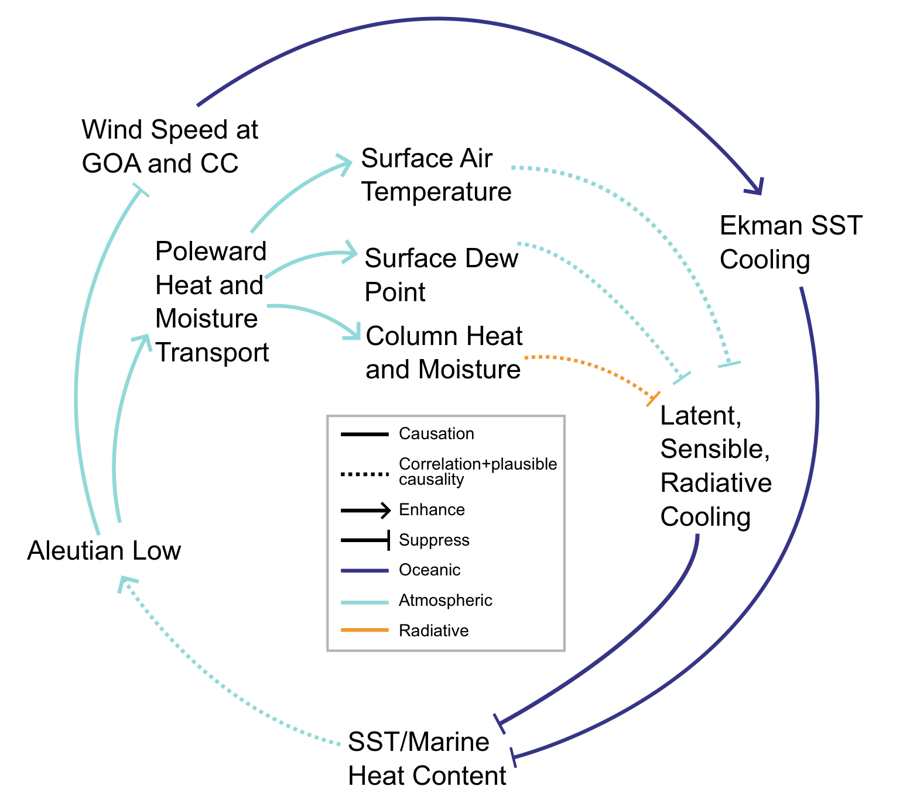
图7：海洋热浪（MHW）持续与增强反馈机制示意图。
Fig. 7: Schematic of the feedback mechanism of marine heat wave (MHW) persistence and enhancement.
GOA、CC和SST分别代表阿拉斯加湾、加利福尼亚寒流和海表温度。
GOA, CC, and SST stand for Gulf of Alaska, California Current, and sea surface temperature, respectively.
浅蓝、橙和深蓝箭头分别指大气过程、辐射过程和海洋过程。
The light blue, orange, and dark blue arrows refer to atmospheric, radiative, and oceanic processes, respectively.
虚线箭头表示具有强相关性和合理机制、但迄今仍有待更好定量刻画的关系。
The dashed arrows denote relations that exhibit strong correlation and plausible mechanism but, to date, remains to be better quantified.
如果这样一个正反馈回路能够增强东北太平洋的海洋热浪，人们或许会预期2013–2016年这样的事件更频繁地发生。
If a positive feedback loop can thus reinforce MHWs in the NEP, one might expect events in 2013–2016 to occur more frequently.
此类事件之所以罕见，可能由两个因素解释。
The rarity of such events may be explained by two factors.
第一，尽管局地SST距平能够显著影响大气环流，SLP距平的强度和位置也受到其他气候模态的影响，其中尤为关键的包括厄尔尼诺–南方涛动、远程SST强迫和季节循环[3,23,26,57]。
First, while local SST anomalies can significantly influence atmospheric circulation, the strength and position of SLP anomalies are also influenced by other climate modes, including, crucially, the El Nino-Southern Oscillation, remote SST forcing, and the seasonal cycle[3,23,26,57].
因此，正反馈回路的效率可能取决于海洋热浪相对于这些其他气候模态出现的时机。
Thus, the positive feedback loop efficiency may depend on the timing of the MHW relative to those other climate modes.
第二，暖SST距平会通过增强蒸发、感热通量和向上长波辐射，增加海洋向大气的热损失，从而形成一个与之竞争的负反馈[52,59]。
Second, warm SST anomalies enhance heat loss to the atmosphere via increased evaporation, sensible heat flux, and upward longwave radiation, thus forming a competing negative feedback[52,59].
当热距平具有较大的热惯性时，这种阻尼过程会在更长的时间尺度上起作用[19]。
When the heat anomaly has larger thermal inertia, this damping process operates over a longer timescale[19].
因此，2013–2016年海洋热浪持续多年，很可能是有利的发生时机与异常巨大的热含量距平共同作用的结果。
The multi-year persistence of the 2013–2016 MHW likely thus resulted from a combination of favorable timing and an unusually large heat content anomaly.
在更温暖的气候中，SST负反馈的效力可能会减弱。
It is plausible that the negative SST feedback will become less effective in a warmer climate.
随着湿度和温室气体浓度升高，长波辐射对暖距平的阻尼效率会降低[60]。
With increased humidity and greenhouse gas concentrations, longwave radiative damping of warm anomalies becomes less efficient[60].
因此，海气耦合系统在放大气候波动和驱动未来极端事件方面可能会更加有效。
As a result, the air-sea coupled system may become more effective in amplifying climate fluctuations and driving future extremes.
方法
Methods
数据
Data
本研究使用的主要数据集是ECCO4状态估计再分析（“海洋环流与气候估算”第4版第4次发布），它提供了与大量现场和卫星数据集达成统计一致的完整热量收支估计[24,36,37,61,62]。
The main dataset used in this study is the ECCO4 state estimate reanalysis (Estimating the Circulation and Climate of the Ocean, Version 4, release 4), which provides a comprehensive heat budget estimate that has been brought into statistical agreement with many in situ and satellite data sets[24,36,37,61,62].
这些特性的结合使ECCO4能够解释观测到的温盐变化，并将其归因于已知的物理机制，如海气通量、平流或扩散[61,63,64,65]。
This combination of features allows ECCO4 to interpret observed thermohaline variability and attribute it to known physical mechanisms such as air-sea fluxes, advection, or diffusion[61,63,64,65].
ECCO4与Argo现场观测的比较见图S.3–S.4和图S.16–S.17。
Comparisons between ECCO4 and in situ Argo measurements are shown in Figs. S.3–S.4 and S.16–S.17.
两个数据集的高度一致表明ECCO受到Argo观测的良好约束，验证了该再分析产品可用于三维拉格朗日分析。
The close agreement between the two datasets reflects that ECCO is well constrained by Argo observations, validating the reanalysis product for the 3D Lagrangian analyses.
为划定海洋热浪，我们使用最优插值海表温度（OISST）产品的逐日SST资料。
To delineate marine heatwaves, we use daily SST data from the Optimum Interpolation Sea Surface Temperature (OISST) product.
OISST结合了卫星观测、船舶和浮标测量，并采用最优插值方法提供0.25°空间分辨率的全球网格化SST场[66,67,68]。
OISST combines satellite observations, ship and buoy measurements, and employs optimum interpolation to provide globally gridded SST fields at 0.25° spatial resolution[66,67,68].
OISST被广泛用于海洋热浪检测[12,15,25]。
OISST is commonly used for marine heatwave detection[12,15,25].
文献[12]最近报道了OISST与ECCO4在海洋热浪指标上的良好一致性（另见图S.1、S.2），该文还强调了ECCO4闭合热量收支在此背景下所提供的见解[12]。
Good agreement between OISST and ECCO4 for marine heat wave metrics was recently reported in ref. [12] (see also Figs. S.1, S.2), which also highlights the insights provided by ECCO4’s closed heat budgets in this context[12].
为进一步研究与海洋热浪相关的大气强迫，我们使用ERA5再分析[69,70]。
To further investigate the atmospheric forcing associated with the marine heatwave, we utilize the ERA5 reanalysis[69,70].
将ERA5与OISST结合，可得到一整套海气热通量估计（湍流：潜热与感热；辐射：长波与短波），可与ECCO4对这些量的估计进行比较。
Combining ERA5 with OISST provides a full set of air-sea heat flux estimates (turbulent: latent and sensible; and radiative: longwave and shortwave) that can be compared with ECCO4 estimates of these quantities.
ERA5还使我们能够诊断垂直积分的大气水汽和热量输送。
ERA5 also allows us to diagnose vertically integrated atmospheric moisture and heat transports.
海洋热浪持续时间与累积强度
Marine heatwave duration and cumulative intensity
为验证我们对海洋热浪的识别、并相对于已有定义评估其强度，我们采用文献[34]中广泛使用的基于阈值的方法。
To validate our MHW identification and assess its intensity relative to established definitions, we apply the widely-used threshold-based approach of ref. [34].
这一常规定义便于与现有海洋热浪文献进行比较，并确认2013–2016年事件构成了显著的热距平。
This conventional definition facilitates comparison with existing MHW literature and confirms that the 2013–2016 event constitutes significant thermal anomalies.
在该方法中，海洋热浪定义为：逐日SST至少连续五天超过气候态SST分布随季节变化的第90百分位阈值的一段离散时期。
In this approach, an MHW is defined as a discrete period during which daily SST exceeds the seasonally varying 90th-percentile threshold of the climatological SST distribution for at least five consecutive days.
气候基线和百分位阈值由1992–2017年OISST资料计算，以与其他分析保持一致；该时段略短于常用的30年参考窗口[34]。
The climatological baseline and percentile thresholds were computed from 1992–2017 OISST data to maintain consistency with the other analyses, which is slightly shorter than the commonly used 30-year reference window[34].
这种基于事件的方法在海洋热浪研究中被广泛使用，便于将本工作与现有文献进行比较[71]。
This event-based approach is widely used in MHW research and facilitates comparison between this work and the existing literature[71].
我们利用两个互补指标量化海洋热浪的严重程度：海洋热浪持续时间——对每个网格单元和每个季节，我们计算被归类为海洋热浪日的总天数（即属于满足5天最短标准的事件的天数）。
We quantified MHW severity using two complementary metrics: MHW Duration: For each grid cell and season, we calculated the total number of days classified as MHW days (i.e., days belonging to events meeting the 5-day minimum criterion).
季节持续时间的理论最大值为92天（MAM和JJA各含92个日历日）。
The theoretical maximum seasonal duration is 92 days (MAM and JJA each contain 92 calendar days).
累积强度：对每个网格点和每个季节，我们把该季节所有海洋热浪日的逐日强度求和，其中逐日强度定义为逐日SST超出季节气候平均SST的部分[34]。
Cumulative Intensity: For each grid cell and season, we summed the daily intensity across all MHW days in that season, where daily intensity was defined as the excess of daily SST above the seasonal climatological mean SST[34].
该指标将距平幅度和事件持续性整合为单一度量，单位为°C·天。
This metric integrates both anomaly magnitude and event persistence into a single measure with units of ° C ⋅ days.
季节定义为：12–2月（DJF；南半球夏季）、3–5月（MAM；秋季）、6–8月（JJA；冬季）、9–11月（SON；春季）。
Seasons were defined as December–February (DJF; austral summer), March–May (MAM; autumn), June–August (JJA; winter), and September–November (SON; spring).
对于第n年的DJF，第n−1年的12月与第n年的1–2月归为一组。
For DJF of year n, December of year n − 1 was grouped with January–February of year n.
基于OISST和基于ECCO的持续时间与累积强度分别示于图2和图S.18，看起来几乎相同。
Duration and cumulative intensity based on OISST and ECCO are shown in Figs. 2 and S.18, respectively, and appear nearly identical.
ECCO中的温度倾向方程
Temperature tendency equation in ECCO
在ECCO中，每个网格点内热含量的时间变化可由外部（海表）强迫以及平流通量和扩散通量的辐合来解释，精度达到机器精度[36,72,73]。
In ECCO, temporal changes in heat content within each grid cell are explained up to machine precision by external (surface) forcing and the convergence of advective, and diffusive fluxes[36,72,73].
这构成了温度倾向方程的基础，该方程为观测到的温度变化提供了有物理依据的解释。
This forms the basis of the temperature tendency equation, which offers a physically grounded explanation for observed temperature variations.
联立热量收支与体积收支，我们将（位）温倾向方程表示为式1。
Using both the heat and volume budgets, we express the (potential) temperature tendency equation as in Eq. (1).
(1)
(1)
(2)
(2)
(3)
(3)
其中，各算子定义如下。
where and the operators are defined as follows.
首先，的方程由时刻t₀与t₁之间的热含量变化（ΔH）和体积变化（ΔV）按联立得到，其中ρ为密度，cₚ为比热容，V₀为静止状态下的体积。
First, the equation for is obtained by combining the heat content change (ΔH) and volume change (ΔV) between time t₀ and t₁ according to , where ρ is the density, cₚ is the specific heat capacity, and V₀ is the volume at rest.
接着，我们对平流、扩散和强迫散度项应用同样的规则——这些项由MITgcm在线精确诊断——从而得到平流通量散度、扩散通量的水平（垂直）辐合（），以及外部（海表）加热。
Next, we apply the same rule to advection, diffusion, and forcing divergence terms, diagnosed exactly by MITgcm (online), and thus obtain the divergence of advective flux , the horizontal (vertical) convergence of diffusive flux (), and the external (surface) heating .
最后，我们采用与ECCO4相同的平流方案，用日平均温度和流场离线重新计算平流项。
Finally, using the same advective scheme as ECCO4, we recompute the advection term offline, , using daily mean temperature and flow fields.
由于平流方案涉及速度与温度的乘积，U和Θ的日内变化可能相关，即，其中表示日平均。
As the advection scheme involves the product of velocity and temperature, sub-daily variation of U and Θ can be correlated, i.e. , where denotes the daily average.
这就是很小但不为零的原因。
This is why is small but not zero.
Θ为（位）温，U为欧拉速度与涡致输运速度（bolus velocity）之和[74]，K为跨等密度面加沿等密度面扩散系数[75]，为非绝热加热（跨海表的辐射与湍流通量，加上海底的地热加热），表示平流的未归因（NA）分量。
Θ is the (potential) temperature, U is the sum of Eulerian velocity and eddy bolus velocity[74], K is diapycnal plus isopycnal diffusivity[75], is diabatic heating (radiative and turbulent fluxes across the sea surface, plus geothermal heating at the sea floor), and represents the not attributed (NA) component of advection.
由于集中于海表，我们也称其为海表加热。
Since is concentrated at the surface, we also refer to it as surface heating.
式(2)和式(3)中的上划线（）表示气候平均季节循环，定义为研究期间每个日历日（年积日）所有观测的平均。
The overlines () in Equations (2) and (3) represent the climatological mean seasonal cycle, defined as the average of all observations for each calendar day (day-of-year) throughout the study period.
为聚焦温度距平（）——这是研究海洋热浪所需的——我们计算式(1)与其平均季节气候态（1992至2017年，式(2)）之间的差。
To focus on temperature anomalies (), as needed to study the MHW, we calculate the anomaly between Equation (1) and its mean seasonal climatology (1992 to 2017, Equation (2)).
这一相减是必要的，因为温度的平均季节循环在热含量变化上与温度距平量级相当，如图S.9所示。
This subtraction is essential because the mean seasonal cycle of temperature is comparable in heat content change to the temperature anomaly, as shown in Fig. S.9.
于是得到温度距平倾向方程（式(3)）。
As a result, we have the temperature anomaly tendency equation (Equation (3)).
一个重要考量是，式(3)适用于拉格朗日计算，因为其左端是随速度U运动的有效物质导数（而非随或运动的物质导数）。
An important consideration is that Equation (3) is suitable for Lagrangian calculations because its left hand side is a valid material derivative for U (as opposed to or ).
还要注意，和应理解为扩散通量辐合的距平，而不是作用于的扩散，因为例如K在混合层内是变化的。
Also note that and should be interpreted as the anomalies in diffusive flux convergence—not as diffusion acting on —because, for example, K varies in the mixed layer.
在ECCOv4r4中，总垂直扩散系数包括背景扩散系数（通过伴随方法优化）[36]、对流不稳定、GGL90混合层参数化[76]以及Redi涡致参数化[75]的贡献，得到的是模式优化过程中估计的、随空间和垂直方向变化的系数。
In ECCOv4r4, the total vertical diffusivity includes contributions from the background diffusivity (optimized through the adjoint method)[36], convective instability, the GGL90 mixed-layer parameterization[76], and the Redi eddy-induced parameterizations[75], resulting in spatially- and vertically-varying coefficients estimated during the model optimization.
类似地，中的向上长波分量非线性地依赖于Θ的值，而不仅仅依赖于。
Similarly, the upward longwave component within depends non-linearly on the value of Θ – not just on .
我们使用模式在线输出的海表和扩散热通量来计算收支。
We use the surface and diffusive heat flux from online model output to calculate the budget.
更多细节请参阅文献[77]。
For more detail, we refer the reader to ref. [77].
海洋热浪的定义与被动示踪物实验
Definition of MHW and passive tracer experiment
海洋热浪定义为东北太平洋（NEP）内温度距平超过1.5°C的最大连通体积，范围为20°N至60°N、180°W至90°W。
The MHW is defined as the largest contiguous volume with a temperature anomaly exceeding 1.5 °C within the Northeastern Pacific (NEP), bounded by 20° N to 60° N and 180° W to 90° W.
名义上我们把深度上限设为200 m，但海洋热浪实际只到达约150 m深度（图S.8）。
Nominally, we set the depth limit at 200 m, but the MHW only reaches a depth of approximately 150 m (Fig. S.8).
为追踪海洋热浪，我们使用ECCO建模工具（EMU）在无通量边界条件下开展了一系列被动示踪物实验[78]。
To track the MHW, we conduct a series of passive tracer experiments using the ECCO Modeling Utilities (EMU) under no-flux boundary conditions[78].
被动示踪物采用与热量相同的平流和扩散方案输运，但使用周平均流场和扩散系数。
The passive tracer is transported using the same advection and diffusion scheme as heat, but using weekly-mean flow fields and diffusivities.
在2014年和2015年每月月初，我们开展正向被动示踪物实验：在当时海洋热浪区域内以1 mol/m³的均匀浓度初始化示踪物。
At the beginning of each month in 2014 and 2015, we perform forward passive tracer experiments by initializing the tracer within the MHW region at that time with a uniform concentration of 1 mol/m³.
这24个实验对应不同的初始化时刻，均积分至2016年3月1日，所得示踪物场代表不断演变的海洋热浪的拉格朗日快照。
Each of these 24 experiments, corresponding to different initialization times, is run until March 1, 2016, with the resulting tracer fields representing Lagrangian snapshots of the evolving MHW.
然后，我们通过在每个网格盒中取所有示踪物浓度的最大值，将这些被动示踪物场合并。
We then combine the passive tracer fields by taking a maximum of all the resulting tracer concentration in each grid box.
所得合成分布代表了2014年和2015年海洋热浪鼎盛期间所有参与其中的海水的拉格朗日体积。
The resulting composite distribution represents the Lagrangian volume of all water that participated in the height of the MHW in 2014 and 2015.
剔除浓度低于0.1 mol m⁻³（小于释放浓度的10%）的网格单元后，该示踪物分布用于初始化4.5节所述的拉格朗日粒子模拟。
After excluding grid cells with concentrations lower than 0.1 mol m⁻³ ( < 10% of the release concentration), this tracer distribution is used to initialize the Lagrangian particle simulation described in Section 4.5.
伴随（时间反向）示踪物模拟是交叉验证粒子轨迹计算的宝贵互补工具。
Adjoint (backward-in-time) tracer simulations are a valuable, complementary tool for cross-validating particle trajectory calculations.
以合并示踪物分布为初始条件，我们用EMU[78]将伴随示踪物模拟从2016年3月1日反向积分至2014年9月1日。
Using the combined tracer distribution as the initial condition, we run the adjoint tracer simulation using EMU[78] backward from March 1, 2016, to September 1, 2014.
伴随示踪物分布与相应粒子位置的比较见图1i–l、S.6、S.8。
Comparisons between the adjoint tracer distributions and the corresponding particle locations are presented in Figs. 1i–l, S.6, S.8.
拉格朗日收支方法
Lagrangian budget method
遵循文献[77]，我们基于式(3)构建温度、速度、强迫和通量散度的时空插值场。
Following ref. [77], we construct interpolated space-time fields of temperature, velocity, forcings, and flux divergences based on Equation (3).
粒子由三维速度场（由U插值得到）平流输运。
Particles are advected by the 3D velocity field , interpolated from U.
轨迹用Python包seaduck[79]计算，该包实现了分段定常轨迹方案[80]。
Trajectories are computed using the Python package seaduck[79], which implements the piecewise-stationary trajectory scheme[80].
粒子经历的温度变化可由式(3)右端各插值项沿粒子轨迹的时间积分来解释。
Temperature changes experienced by the particles can be explained by the temporal integration of the interpolated right-hand-side terms of Equation (3) along particle trajectories.
这种称为拉格朗日收支的方法，在此用于建立海洋热浪中观测到的温度变化与上游过程之间的因果联系[77]。
This approach, referred to as the Lagrangian budget, is used here to establish causal links between the temperature changes observed in the MHW and upstream processes[77].
速度、温度、强迫和散度场基于逐日ECCO4输出每日更新。
The velocity, temperature, forcing, and divergence fields are updated daily based on the daily ECCO4 output.
在ECCO4中，中尺度涡的效应由GM涡致输运速度（包含在U中）和沿等密度面扩散（以热量收支中扩散通量的三维散度表示）来表示。
In ECCO4, the effect of mesoscale eddies is represented by the GM bolus velocity, which is included in U, and isopycnal diffusion, which is represented by the 3D divergence of diffusive fluxes included in the heat budgets.
捕捉中尺度涡对粒子轨迹影响的一种方法是加入随机弥散[81]，这是我们计划未来探索的方向。
One way of capturing the influence of mesoscale eddies on particle trajectories is to add stochastic dispersion[81], which is a direction that we plan to explore in the future.
可以证明，在简化假设下、其他条件不变时，随机粒子的概率分布与被动示踪物扩散所产生的分布近似相同[81]。
It can be shown that the probability distribution of stochastic particles is approximately equal to passive tracer diffusion if everything else remains the same under simplifying assumptions[81].
在图S.6和S.8中，我们展示了被动示踪物浓度与不含随机弥散的粒子具有非常相似的时空分布，这表明在拉格朗日计算中显式表示中尺度涡搅拌的工作可以留待后续研究。
In Fig. S.6 and S.8, we show that passive tracer concentrations and particles without stochastic dispersion have very similar spatio-temporal distributions, suggesting that including an explicit representation of the stirring by mesoscale eddies in the Lagrangian calculation can be deferred to a later study.
基于4.4节所述的合并被动示踪物分布，拉格朗日粒子于2016年3月1日释放，并反向模拟至2013年9月1日。
Based on the combined passive tracer distribution described in Section 4.4, Lagrangian particles are released on March 1, 2016, and simulated backward in time to September 1, 2013.
选定时刻的粒子位置示于图1i–l，同时给出伴随被动示踪物分布（另见图S.6、S.7、S.8）。
Particle locations at selected times are shown in Fig. 1i–l, with the adjoint passive tracer distribution (see also Figs. S.6–8).
用seaduck[79]对每个粒子进行收支分析，各过程的贡献对所有粒子求和，并按文献[77]以时空积分的形式呈现。
A budget analysis is performed for each particle using seaduck[79], with the contributions of individual processes summed over all particles and presented as space-time integrals following ref. [77].
代理流函数
Proxy stream function
在图5中，代理流函数用于直观表示阿拉斯加湾和加利福尼亚寒流区的环流。
In Fig. 5, proxy stream functions are used to provide an intuitive representation of the circulation in the GOA and CC.
对阿拉斯加湾，代理流函数由经向速度的垂直积分计算。
For GOA, the proxy stream function is calculated by vertically integrating the meridional velocity.
对加利福尼亚寒流区，由于冷却由垂直输运驱动，代理流函数定义在离岸-沿岸轴上，由垂直速度沿向岸方向积分得到。
For CC, since the cooling is driven by vertical transport, the proxy stream function is defined in an offshore-alongshore axis and is obtained by integrating the vertical velocity along the onshore direction.
在两个区域中，所选速度分量都对应于穿越平均等温面的流动，从而捕捉异常环流的增暖效应。
In both regions, the selected velocity component corresponds to the flow crossing the mean isothermal surfaces, thus capturing the warming effect of anomalous circulation.
图S.10–S.11比较了积分速度场与代理流函数。
Figures S.10, 11 compare the integrated velocity field and the proxy stream functions.
在阿拉斯加湾和加利福尼亚寒流区，代理流函数都捕捉到了翻转环流的主要特征。
In both GOA and CC, proxy stream functions capture the main features of the overturning circulation.
在阿拉斯加湾对两点取垂直方向的有限差分，将给出这两点之间的体积输运。
Taking a finite difference between two points in the vertical in the GOA will yield volume transport between those two points.
在加利福尼亚寒流区取水平方向的有限差分，可准确估计垂直方向上两点之间的体积输运。
Taking a finite difference in the horizontal direction in the CC will accurately estimate volume transport between two points in the vertical.
数据可用性
Data availability
本研究使用的ECCO4再分析产品可在 https://ecco-group.org/products-ECCO-V4r4.htm 下载。
The ECCO4 reanalysis product used in this study can be downloaded at https://ecco-group.org/products-ECCO-V4r4.htm.
本研究使用的ERA5数据集可在 https://cds.climate.copernicus.eu/datasets/reanalysis-era5-single-levels-monthly-means?tab=overview 下载。
The ERA5 dataset used in this study can be downloaded at https://cds.climate.copernicus.eu/datasets/reanalysis-era5-single-levels-monthly-means?tab=overview.
OISST产品可在 https://www.ncei.noaa.gov/products/optimum-interpolation-sst 下载。
The OISST product can be downloaded at https://www.ncei.noaa.gov/products/optimum-interpolation-sst.
代码可用性
Code availability
本研究用于数据处理、计算和绘图的全部代码公开于GitHub仓库 https://github.com/MaceKuailv/NEP_MHW_supp_code/，并在Zenodo永久存档[82]。
All code used for data processing, calculation, and plotting in this study is openly available in the GitHub repository accessible at https://github.com/MaceKuailv/NEP_MHW_supp_code/ and permanently archived on Zenodo[82].
致谢
Acknowledgements
作者感谢Ichiro Fukumori和Ou Wang在搭建被动示踪物实验方面提供的帮助。
The authors thank Ichiro Fukumori and Ou Wang for their help with setting up the passive tracer experiment.
海洋热浪检测代码改编自Eric Oliver开发的Python包marineHeatWaves。
The MHW detection code was adapted from the Python package marineHeatWaves, developed by Eric Oliver.
第一作者仅将ChatGPT和Claude用于语言编辑与文字润色。
The first author used ChatGPT and Claude solely for language editing and textual polishing.
这些工具未用于生成科学内容、执行分析、解读结果或得出结论。
These tools were not used to generate scientific content, perform analyses, interpret results, or draw conclusions.
作者对稿件内容承担全部责任。
The authors take full responsibility for the content of the manuscript.
资助
Funding
W.J.和T.W.N.H由美国国家科学基金会资助项目2103874和2242033支持。
W.J. and T.W.N.H are supported by award 2103874 and award 2242033 from the National Science Foundation.
G.F.和Y.S.的贡献由NASA资助项目80NSSC23K0355支持。
G.F. and Y.S. contributions were supported by NASA award 80NSSC23K0355.
G.F.的贡献还得到NASA资助项目1686358和NOAA资助项目OARX431C0017的支持。
G.F. contributions were also supported by NASA award 1686358 and NOAA award OARX431C0017.
作者信息
Author information
作者及单位
Authors and Affiliations
美国马里兰州巴尔的摩，约翰斯·霍普金斯大学地球与行星科学系
Department of Earth and Planetary Sciences, Johns Hopkins University, Baltimore, MD, USA
Wenrui Jiang与Thomas W. N. Haine
Wenrui Jiang & Thomas W. N. Haine
美国马萨诸塞州剑桥，麻省理工学院地球、大气与行星科学系
Department of Earth, Atmospheric and Planetary Sciences, Massachusetts Institute of Technology, Cambridge, MA, USA
Wenrui Jiang、Gaël Forget与Yuanyuan Song
Wenrui Jiang, Gaël Forget & Yuanyuan Song
作者贡献
Contributions
W.J.和G.F构思了研究方向。
W.J. and G.F conceived the research direction.
W.J.和T.W.N.H.发展了方法学。
W.J. and T.W.N.H. developed the methodology.
W.J.完成了全部计算，分析工作则由团队迭代设计或完善。
W.J. conducted all computations, while analyses were designed or refined iteratively with the team.
Y.S.为图5准备了数据。
Y.S. prepared the data for Fig. 5.
W.J.撰写了初稿，全体共同作者均有重要贡献。
W.J. wrote the initial manuscript with significant contributions from all co-authors.
特别地，G.F.帮助简化了方程并提供了SST估计对比，Y.S.协助了摘要撰写和现有文献的综合。
Notably, G.F. helped simplify the equations and provided SST estimate comparisons, and Y.S. helped with the abstract and existing literature synthesis.
全体作者在同行评审期间参与了稿件的修改。
All authors contributed to revising the manuscript during peer-review.
通讯作者
Corresponding author
通信及材料索取请求请联系Wenrui Jiang。
Correspondence and requests for materials should be addressed to Wenrui Jiang.
电子邮件：wrjiang@mit.edu
e-mail: wrjiang@mit.edu
伦理声明
Ethics declarations
利益冲突
Competing interests
作者声明无利益冲突。
The authors declare no competing interests.
同行评审
Peer review
同行评审信息
Peer review information
《Nature Communications》感谢Igor Kamenkovich及其他匿名审稿人为本研究的同行评审作出的贡献。
Nature Communications thanks Igor Kamenkovich and the other anonymous reviewers for their contribution to the peer review of this work.
同行评审文件可供查阅。
A peer review file is available.
其他信息
Additional information
补充信息：在线版本附有补充材料，可通过 https://doi.org/10.1038/s41467-026-76096-0 获取。
Supplementary information The online version contains supplementary material available at https://doi.org/10.1038/s41467-026-76096-0.
重印及许可信息可通过 http://www.nature.com/reprints 查阅。
Reprints and permissions information is available at http://www.nature.com/reprints
出版者说明：Springer Nature对已发表地图及机构隶属关系中的管辖权主张保持中立。
Publisher’s note Springer Nature remains neutral with regard to jurisdictional claims in published maps and institutional affiliations.
版权与许可
Rights and permissions
开放获取：本文依据知识共享署名4.0国际许可协议授权使用。只要您适当注明原作者及来源、提供该知识共享许可协议的链接，并说明是否作出更改，便可在任何媒介或格式下使用、共享、改编、分发及复制本文。
Open Access This article is licensed under a Creative Commons Attribution 4.0 International License, which permits use, sharing, adaptation, distribution and reproduction in any medium or format, as long as you give appropriate credit to the original author(s) and the source, provide a link to the Creative Commons licence, and indicate if changes were made.
除非材料的署名说明另有标注，本文中的图像或其他第三方材料均包含在本文的知识共享许可协议之内。
The images or other third party material in this article are included in the article’s Creative Commons licence, unless indicated otherwise in a credit line to the material.
如果某项材料未纳入本文的知识共享许可协议，而您的预期用途不在法律允许的范围内或超出许可范围，则需要直接向版权持有人取得许可。
If material is not included in the article’s Creative Commons licence and your intended use is not permitted by statutory regulation or exceeds the permitted use, you will need to obtain permission directly from the copyright holder.
要查看本许可协议的副本，请访问http://creativecommons.org/licenses/by/4.0/。
To view a copy of this licence, visit http://creativecommons.org/licenses/by/4.0/.
© 作者 2026
© The Author(s) 2026
《耦合海气相互作用驱动并维持了2013–2016年北太平洋海洋热浪》的补充材料
Supplementary Information for “Coupled air-sea interaction drove and sustained the 2013–2016 North Pacific Marine Heatwave”
补充方法
Supplementary Methods
为确保海洋热浪的内部温度在ECCO中得到良好刻画，我们将ECCO分析与Argo剖面进行比较。
To ensure that the interior temperature of the MHW is well captured in ECCO, we compare the ECCO analysis with Argo profiles.
我们使用经过质量控制、并插值到固定深度层的Argo数据作为参考，在ECCO4中相同的位置和时刻构造虚拟观测。
We use quality controlled Argo data interpolated to fixed levels as reference and make virtual observations in ECCO4 at the same locations and times.
虚拟观测的水平和时间插值采用日平均ECCO4数据集上的最近邻方法，垂直方向则采用分段线性插值。
The horizontal and temporal interpolations for the virtual observations use a nearest neighbor approach on the daily-mean ECCO4 dataset, while a piecewise linear interpolation is used in the vertical.
收集数据集后，我们屏蔽了实际观测和虚拟观测中所有缺失数据以及未通过质量控制的数据，使ECCO4虚拟观测与Argo具有相同的采样行为。
After collecting the dataset, we mask all missing data and those that did not pass quality control in both actual and virtual observations so that the virtual observations from ECCO4 have the same sampling behavior as Argo.
在图S.9定义的两个区域内，我们找出区域内所有剖面（北部51220条，南部20508条），并在2004年1月（Argo实现稳定覆盖）至2017年12月（ECCO4时段结束）之间逐月进行时间分箱平均。
In both areas defined in Fig. S.9, we find all profiles within the area (51220 profiles in the north and 20508 profiles in the south) and conduct temporal bin average for each month between January 2004 (stable coverage of Argo is established) and December 2017 (end of ECCO4 period).
海洋热浪期间的比较见图S.3a,b和S.4a,b。
The comparison during the MHW period is shown in Figs. S.3a,b and S.4a,b.
由于温度距平信号很大程度上被平均季节循环所掩盖，我们计算并去除分箱平均后的现场数据和虚拟数据各自的季节气候平均。
As much of the temperature anomaly signal is masked by the mean seasonal cycle, we calculate and remove the seasonal mean of the bin-averaged in situ and virtual data.
所得距平示于图S.3c,d和S.4c,d。
The resulting anomalies are shown in S.3c,d and S.4c,d.
我们对Argo盐度测量应用相同的流程，结果示于图S.16和S.17。
We apply the same procedures to the Argo salinity measurements and the results are shown in Fig. S.16 and S.17.
补充图件
Supplementary Figures
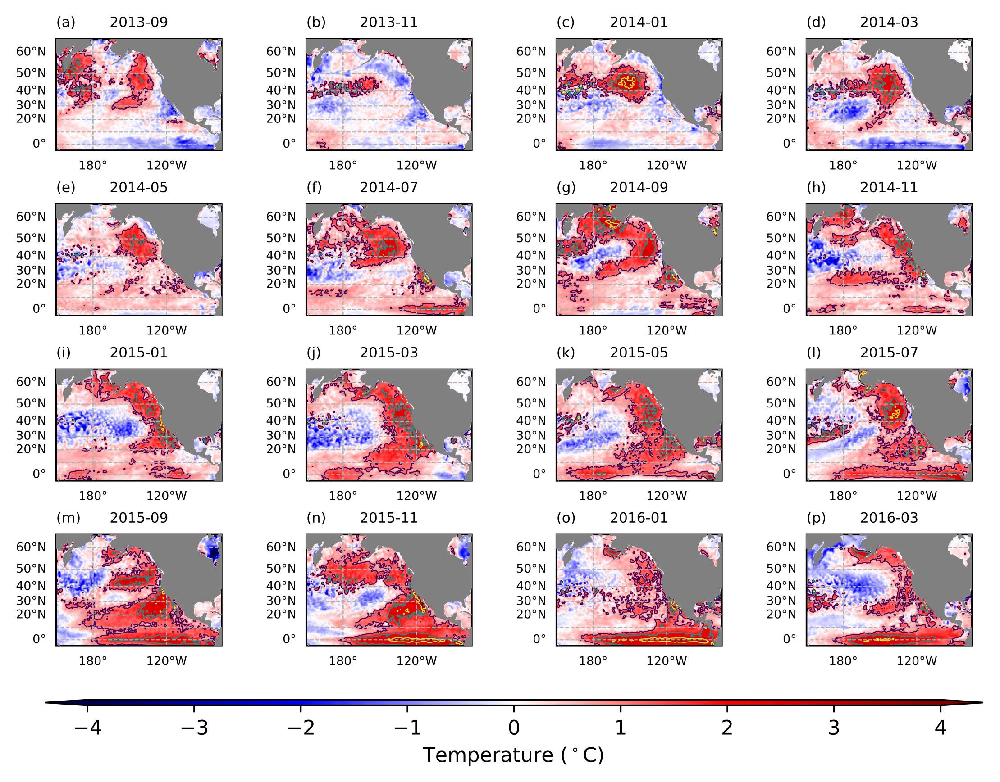
图S.1：来自最优插值海表温度产品（OISST）的月平均海表温度距平图，与图1a–d类似。
Figure S.1: Monthly mean sea surface temperature anomaly maps from the Optimum Interpolation Sea Surface Temperature product (OISST), similar to Fig. 1a–d.
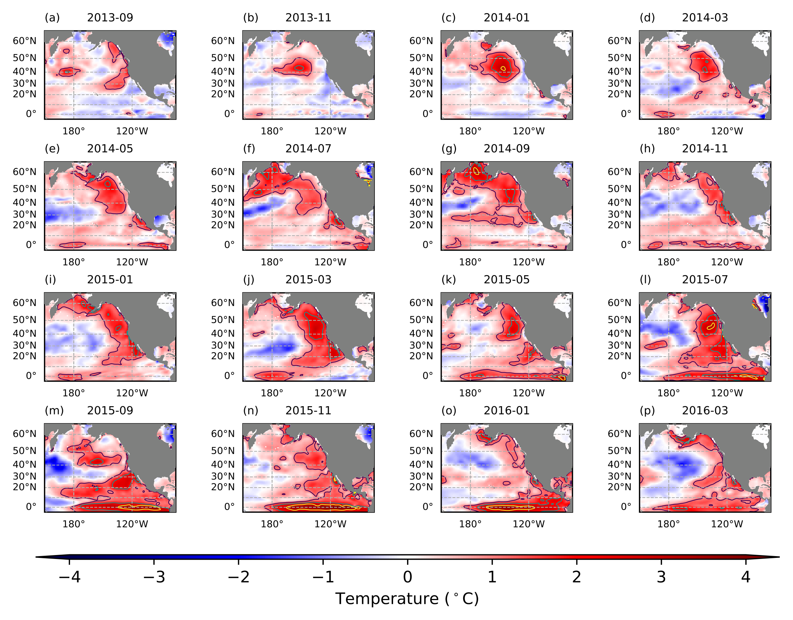
图S.2：来自“海洋环流与气候估算”第4版第4次发布状态估计（ECCO4）的月平均海表温度距平图，与图S.1类似。
Figure S.2: Monthly mean sea surface temperature anomaly maps from the Estimating the Circulation and Climate of the Ocean, Version 4 Release 4 state estimate (ECCO4), similar to Fig. S.1
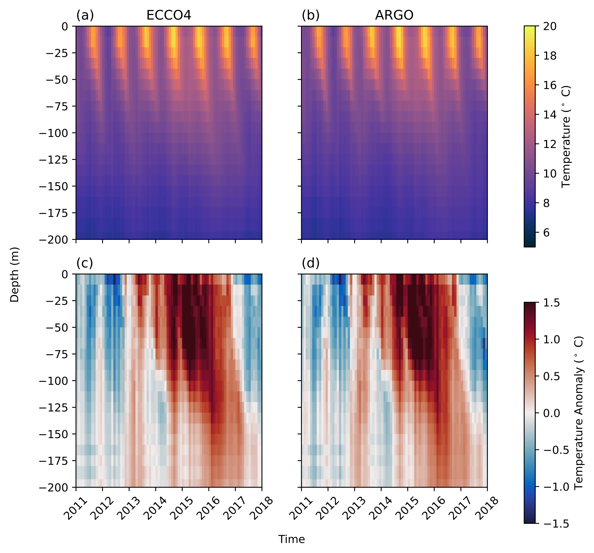
图S.3：在图S.9a绿框内，“海洋环流与气候估算”第4版第4次发布状态估计（ECCO4）与Argo现场观测的比较。
Figure S.3: Comparison between the Estimating the Circulation and Climate of the Ocean, Version 4 Release 4 state estimate (ECCO4) and Argo in situ observation in the green box in Fig. S.9a.
左列来自ECCO4的虚拟测量（见4.6小节），右列来自Argo现场测量。
The left column is from virtual measurements from ECCO4 (see Subsection 4.6), and the right column is from Argo in situ measurements.
上行为温度，下行为相对于2004至2017年季节气候平均的距平（见4.6小节）。
The top row is the temperature and the bottom row is the anomaly against seasonal mean between 2004 and 2017 (see Subsection 4.6).
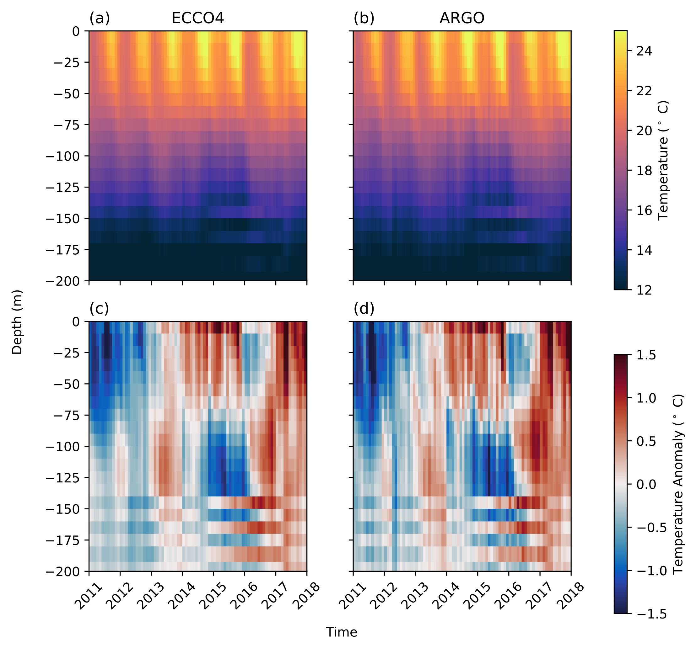
图S.4：与图S.3类似，但针对图S.9a中的蓝框。
Figure S.4: Similar to Fig. S.3, but for the blue box in Fig. S.9a.
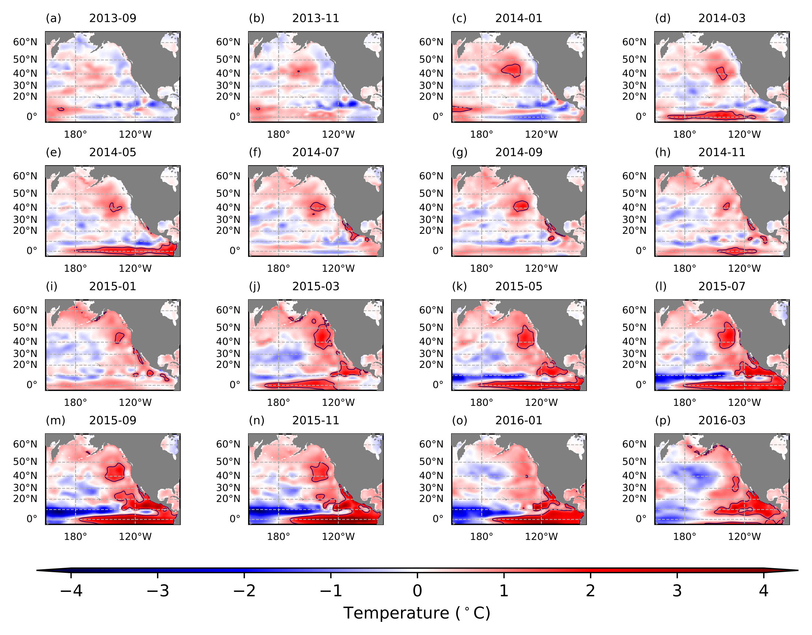
图S.5：来自“海洋环流与气候估算”第4版第4次发布状态估计（ECCO4）的上层150 m垂直平均的月平均温度距平，与图1e–h类似。
Figure S.5: Monthly mean temperature anomaly averaged in the upper 150 m from the Estimating the Circulation and Climate of the Ocean, Version 4 Release 4 state estimate (ECCO4), similar to Fig. 1e–h.
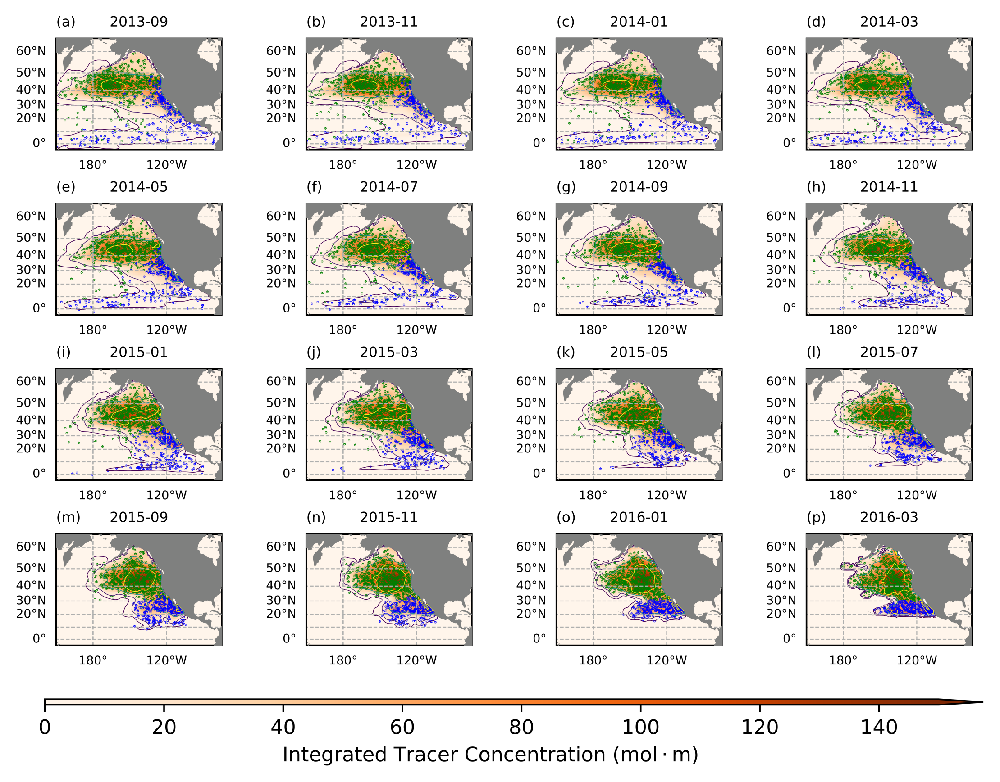
图S.6：垂直积分被动示踪物浓度和拉格朗日粒子分布的快照，与图1i–l类似。
Figure S.6: Snapshots of vertical integrated passive tracer concentration and Lagrangian particle distributions, similar to Fig. 1i–l.
示踪物和粒子均于2016年3月在合并海洋热浪（MHW）中释放，并做时间反向模拟。
Both tracer and particles are released in the combined marine heat wave (MHW) in March 2016, and simulated backward in time.
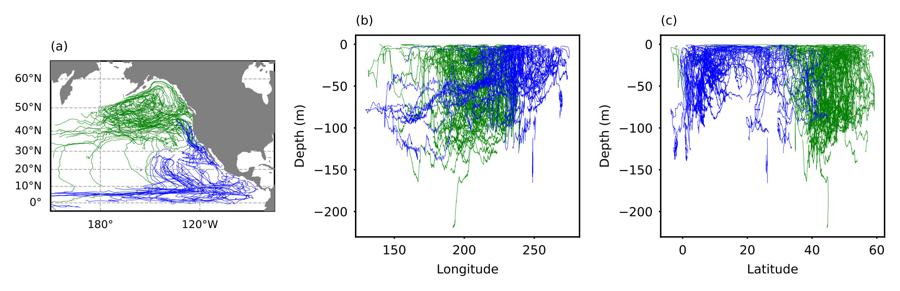
图S.7：代表海洋热浪北部（N-MHW；蓝色，140个粒子）和南部（S-MHW；绿色，60个粒子）的随机选取粒子的轨迹，分别位于经度-纬度(a)、经度-深度(b)和纬度-深度平面(c)。
Figure S.7: Trajectories of randomly selected particles representing the northern part of the marine heat wave (N-MHW; blue, 140 particles) and the southern part of the marine heat wave (S-MHW; green, 60 particles) in the longitude-latitude (a), longitude-depth (b), and latitude-depth planes (c).
粒子于2016年3月在合并海洋热浪（MHW）中释放，反向模拟至2014年9月（见方法）。
Particles are released in the combined marine heat wave (MHW) in March 2016, and simulated backward to September 2014 (see Methods).
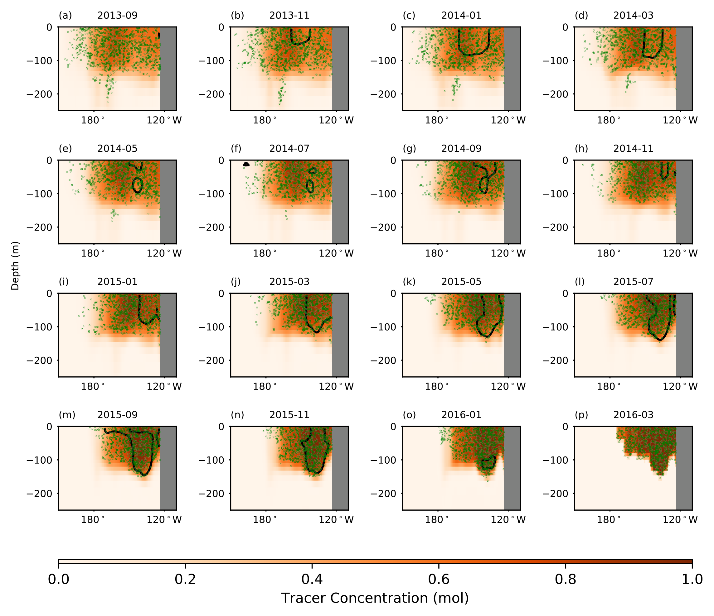
图S.8：被动示踪物浓度（填色，45°N处）、虚拟粒子位置（粒子位置介于44.9°N和45.1°N之间）以及温度距平（等值线1.5°C，45°N处）的垂直剖面。
Figure S.8: Vertical sections of passive tracer concentration (shading, at 45°N), virtual particle locations (particle position between 44.9°N and 45.1°N), and the temperature anomaly (contour at 1.5°C, at 45°N).
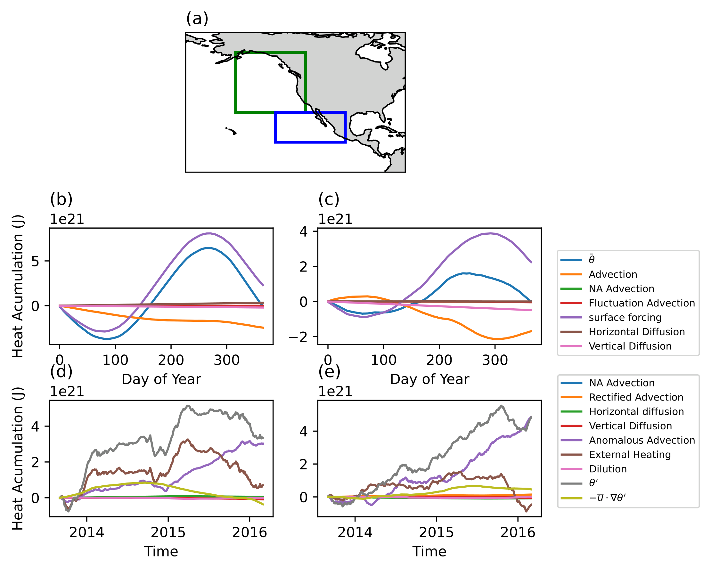
图S.9：(a) 欧拉热量收支（式(2)、(3)）的区域。
Figure S.9: (a) The areas of Eulerian heat budgets (Eqs. (2), (3)).
绿框表示155°W至120°W、30°N至60°N的经纬度区域。
The green box denotes the longitude-latitude region spanning 155°W to 120°W and 30°N to 60°N.
蓝框覆盖135°W至100°W、15°N至30°N的区域。
The blue box covers the area from 135°W to 100°W and 15°N to 30°N.
绿框（蓝框）的收支结果显示在上（下）行。
The budget results from the green (blue) box are shown in the top (bottom) row.
(b)和(c)分别显示绿框和蓝框中温度的平均季节变化以及平均热量收支各项的累积和。
(b) and (c) show the mean seasonality of temperature and the cumulative sum of each term in the mean heat budget in the green and blue boxes, respectively.
(d)和(e)类似，但显示季节距平及热量距平收支中的各项。
(d) and (e) are similar but show the seasonal anomalies and terms in the heat anomaly budget.
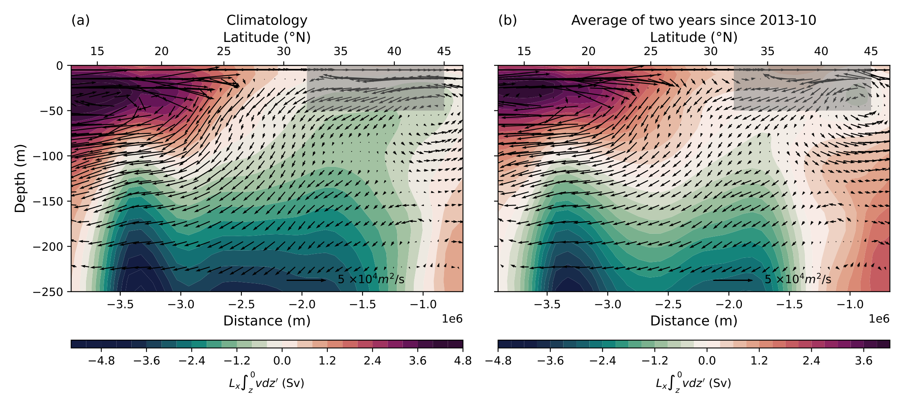
图S.10：阿拉斯加湾（GOA）翻转环流表示方法的比较。
Figure S.10: Comparison of overturning representations in the Gulf of Alaska (GOA).
箭头显示图平面内纬向积分（在图3灰框内）速度的经向和垂直分量。
The arrows show the zonally integrated (within the grey box in Fig. 3) meridional and vertical components of the velocity in the plane of the figure.
由于区域纵横比很大，箭头的角度按与区域相同的方式缩放，即箭头与水块轨迹平行。
Because of the large aspect ratio of the domain, the angles of the arrows are scaled the same way as the domain, i.e., the arrows are parallel to water parcel trajectories.
填色为代理翻转流函数，同图5a,b。
The shadings are the proxy overturning stream function, as in Fig. 5a,b.
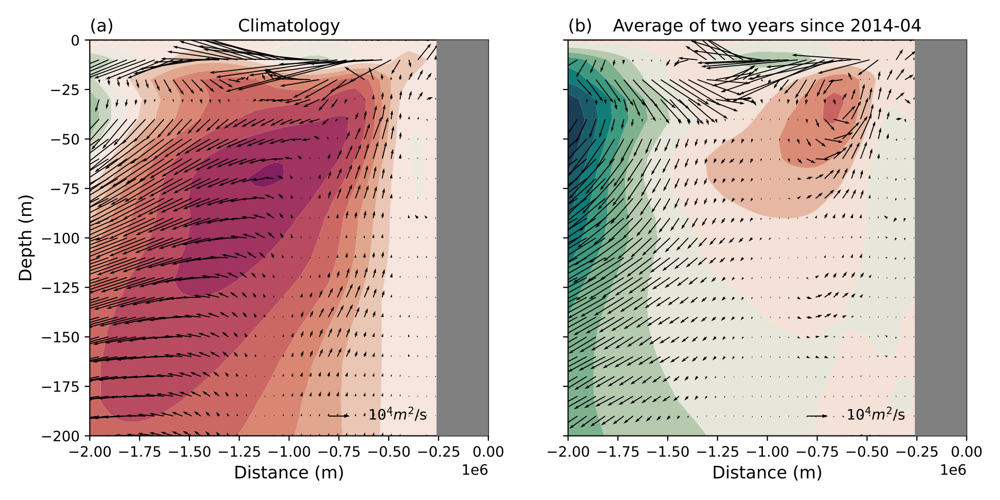
图S.11：同图S.10，但针对加利福尼亚寒流。
Figure S.11: As Fig. S.10, except for the California Current.
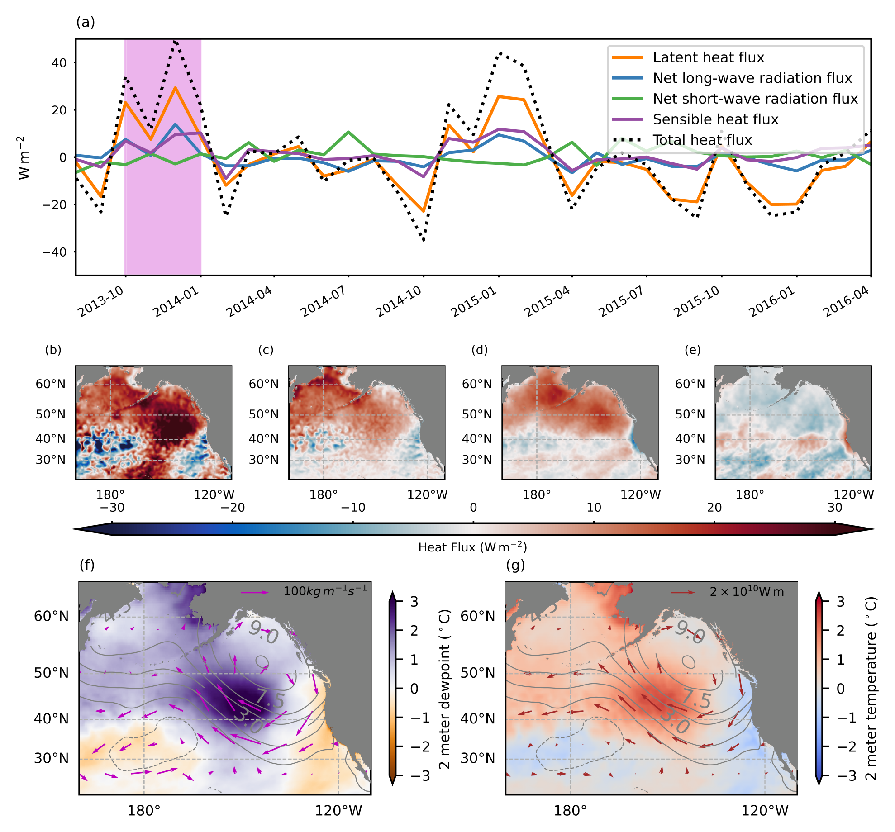
图S.12：与图6类似的海表热通量增暖分析，但针对2013年10月、11月和12月。
Figure S.12: Analysis of the warming from surface heat flux similar to Fig. 6, but for October, November, and December of 2013.
阿拉斯加海岸附近的一个高海平面气压（SLP）系统最终造成了这次增暖。
A high sea level pressure (SLP) system near the Alaskan coast is ultimately responsible for this warming.
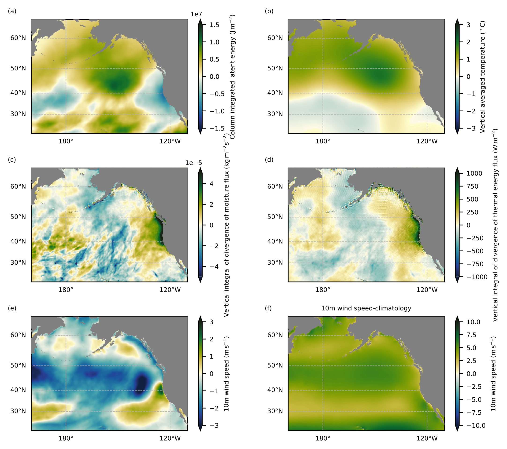
图S.13：影响海表热通量但未包含在图S.12中的整层积分热力学变量(a-d)和异常风速(e)，与图S.15类似。
Figure S.13: Column integrated thermodynamic variables (a-d) and anomalous wind speed (e) that influence surface heat flux but are not included in Fig. S.12, similar to Fig. S.15.
面板(f)显示10月、11月和12月的气候平均风速。
Panel (f) shows the climatological mean wind speed of October, November, and December.
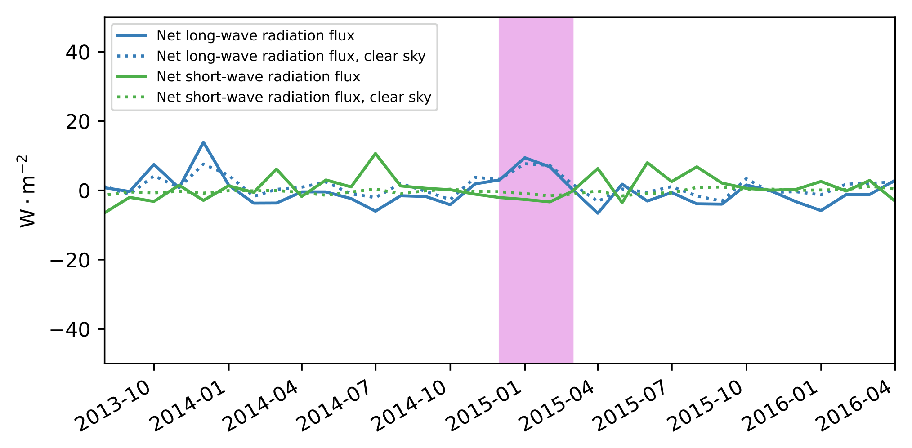
图S.14：在图3青框内平均的辐射通量时间序列（实线，向下通量为正）及相应晴空通量（点线），与图6a类似。
Figure S.14: Time series of radiative fluxes (solid lines, downward fluxes are positive) and the corresponding clear sky flux (dotted lines) averaged in the cyan box in Fig. 3, similar to Fig. 6a.
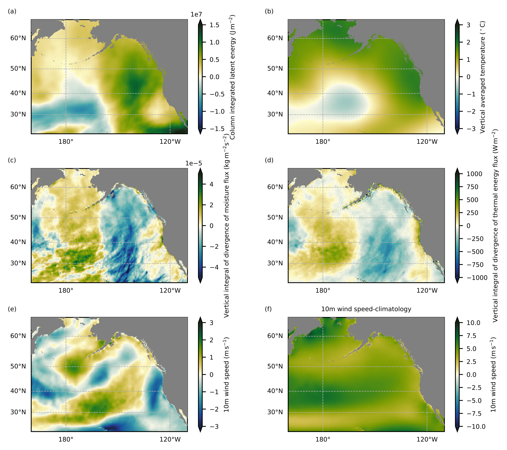
图S.15：影响海表热通量但未包含在图6中的整层积分热力学变量(a-d)和异常风速(e)。
Figure S.15: Column integrated thermodynamic variables (a-d) and anomalous wind speed (e) that influence surface heat flux but are not included in Fig. 6.
侧向热通量和水汽通量的负散度(c–d)导致整层积分潜热能(a)和垂直积分温度(b)增加，这有助于滞留长波辐射能量（图6d），并与近海面气温和露点正相关（图6f–g）。
Negative divergences of lateral heat and moisture flux (c–d) cause increase in column integrated latent energy (a) and vertically integrated temperature (b), which help to trap longwave radiation (Fig. 6d) and are positively correlated with surface air temperature and dew point (Fig. 6f–g).
较高的风速(e)促进海表湍流热损失（图6b–c）。
Higher wind speed (e) facilitates surface turbulent heat loss (Fig. 6 b–c).
作为对比，面板(f)显示12月、1月和2月的气候平均风速。
For comparison, Panel (f) shows the climatological mean wind speed of December, January, and February.
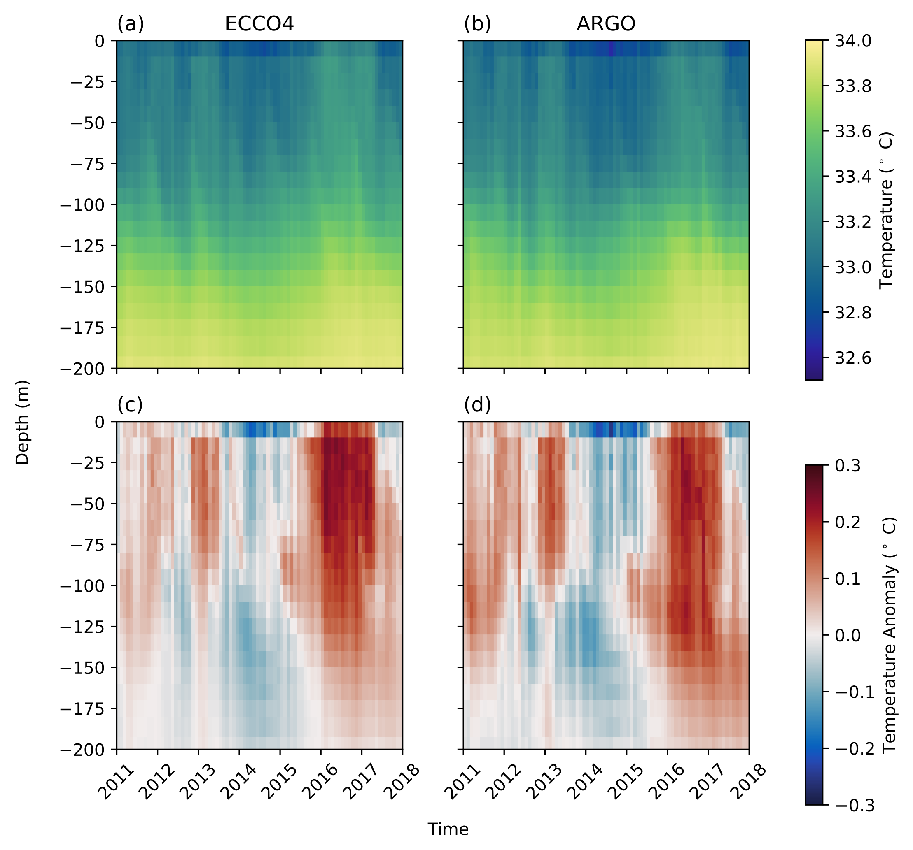
图S.16：与图S.3类似，但为盐度而非温度。
Figure S.16: Similar to Fig. S.3, but for salinity instead of temperature.
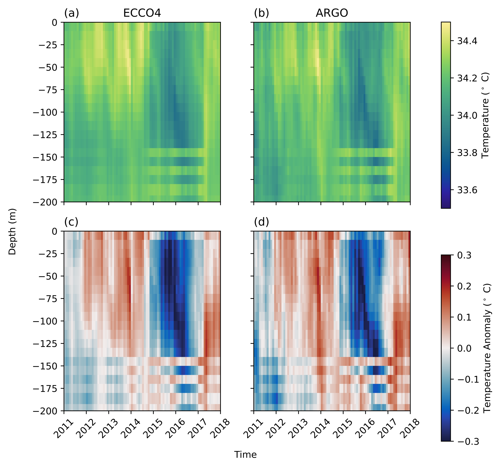
图S.17：与图S.4类似，但为盐度而非温度。
Figure S.17: Similar to Fig. S.4, but for salinity instead of temperature.
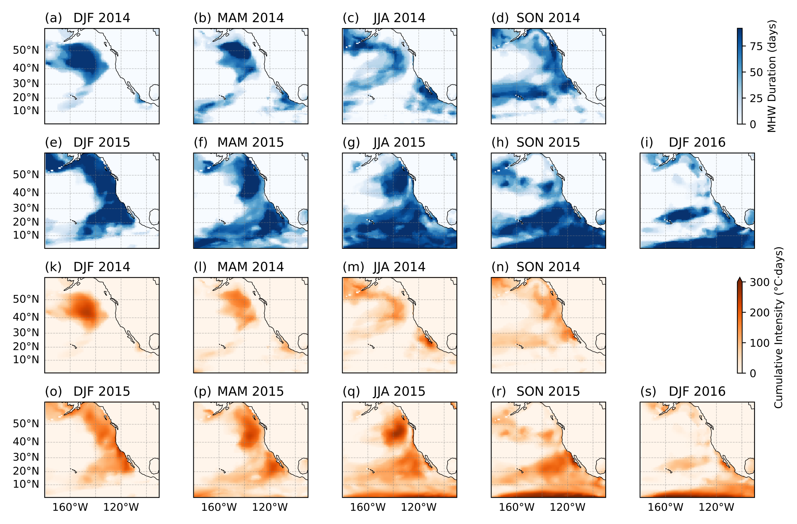
图S.18：与图2类似，但基于“海洋环流与气候估算”第4版第4次发布状态估计（ECCO4）的海表温度（SST）。
Figure S.18: Similar to Fig. 2, but based on the sea surface temperature (SST) of the Estimating the Circulation and Climate of the Ocean, Version 4 Release 4 state estimate (ECCO4).